<!doctype html>
<html lang="en">
<head>
  <meta charset="utf-8">
  <meta name="viewport" content="width=device-width, initial-scale=1">
  <title>arxiv digest — 2026-08-05</title>
  <style>
:root {
  --bg: #ffffff;
  --fg: #1f2328;
  --muted: #59636e;
  --border: #d0d7de;
  --card: #f6f8fa;
  --link: #0969da;
}
body {
  max-width: 980px;
  margin: 0 auto;
  padding: 2rem 1rem 5rem;
  font-family: -apple-system, BlinkMacSystemFont, "Segoe UI", Helvetica, Arial, sans-serif;
  line-height: 1.55;
  color: var(--fg);
  background: var(--bg);
}
a { color: var(--link); }
img { max-width: 100%; height: auto; }
pre, code { background: var(--card); border-radius: 6px; }
pre { padding: 1rem; overflow-x: auto; }
blockquote { border-left: 4px solid var(--border); padding-left: 1rem; color: var(--muted); }
details { margin: 0.6rem 0; }
summary { cursor: pointer; font-weight: 600; }
.paper-figures-scroll {
  display: flex;
  gap: 1rem;
  overflow-x: auto;
  overscroll-behavior-x: contain;
  padding: 0.75rem 0.25rem 1rem;
  margin: 1rem 0 1.25rem;
  border-top: 1px solid var(--border);
  border-bottom: 1px solid var(--border);
  scroll-snap-type: x proximity;
}
.paper-figure-card {
  flex: 0 0 min(260px, 72vw);
  scroll-snap-align: start;
  background: var(--card);
  border: 1px solid var(--border);
  border-radius: 12px;
  padding: 0.55rem;
}
.paper-figure-card img {
  display: block;
  width: 100%;
  max-height: 240px;
  object-fit: contain;
  background: white;
  border-radius: 8px;
}
.paper-figure-caption {
  display: block;
  margin-top: 0.5rem;
  color: var(--muted);
  font-size: 0.85rem;
}
.figure-strip-hint {
  color: var(--muted);
  font-size: 0.9rem;
  margin-bottom: -0.3rem;
}
</style>
  <!-- MathJax: renders $...$ inline math and $$...$$ display math, plus
       \(...\) and \[...\]. Loaded from the official CDN; works offline
       once cached. Configured to skip code/pre blocks so arxiv IDs that
       look like dollar amounts don't get mangled. -->
  <script>
    window.MathJax = {
      tex: {
        inlineMath: [['$', '$'], ['\\(', '\\)']],
        displayMath: [['$$', '$$'], ['\\[', '\\]']],
        processEscapes: true,
        processEnvironments: true
      },
      options: {
        skipHtmlTags: ['script', 'noscript', 'style', 'textarea', 'pre', 'code'],
        ignoreHtmlClass: 'tex2jax_ignore',
        processHtmlClass: 'tex2jax_process'
      }
    };
  </script>
  <script id="MathJax-script" async
    src="https://cdn.jsdelivr.net/npm/mathjax@3/es5/tex-chtml.js"></script>
</head>
<body>
<header style="background-color: #333; color: white; padding: 15px; margin-bottom: 20px;">
  <h1 style="margin: 0; font-size: 24px;">
    <a href="https://ochelpan.github.io/arXiv_clean/" style="color: white; text-decoration: none;">Main</a>
  </h1>
</header>

<h1>Daily arXiv Report</h1>

<hr>
<p>
<a href="index.html">← Index</a>
 · <a href="papers_07.html">← Previous</a> · <a href="papers_09.html">Next →</a>
</p>
<hr>

<h2>Papers 141–160</h2>
<p><a id="paper-2608.01769"></a></p>
<h3 id="quantum-simulation-of-nuclear-shell-model-using-gcm-based-methods-on-nisq-devices"><a href="http://arxiv.org/abs/2608.01769v1">Quantum Simulation of Nuclear Shell Model Using GCM-Based Methods on NISQ Devices</a></h3>
<p><strong>Authors:</strong> Durgesh Pandey, Ashutosh Singh, Ankit Kumar Das, P. Arumugam<br>
<strong>Type:</strong> theory · <strong>Category:</strong> quantum information and computing · <strong>PDF:</strong> <a href="https://arxiv.org/pdf/2608.01769v1">https://arxiv.org/pdf/2608.01769v1</a><br>
<strong>Analysis basis:</strong> full PDF text, analyzed in chunks</p>
<div class="figure-strip-hint">↔ Scroll figures horizontally</div>
<div class="paper-figures-scroll">
<figure class="paper-figure-card">
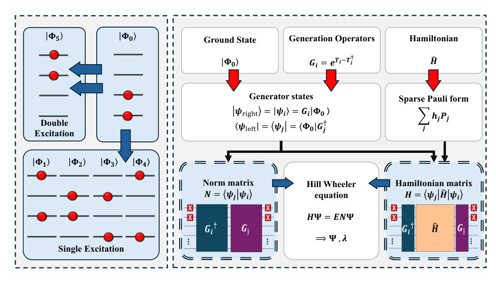
<figcaption class="paper-figure-caption"><b>Fig 1.</b> FIG. 1. Flowchart of the hybrid QuGCM. A non-orthogonal basis is first constructed classically from a reference state. A quantum computer is then employed to calculate the Hamiltonian (H) and Norm (N) matrices in this basis. The system’s energies (E) and wavefunctions (Ψ) are obtained by classically solving the resulting Hill-Wheeler generalized eigenvalue equation, HΨ = ENΨ.</figcaption>
</figure>
<figure class="paper-figure-card">
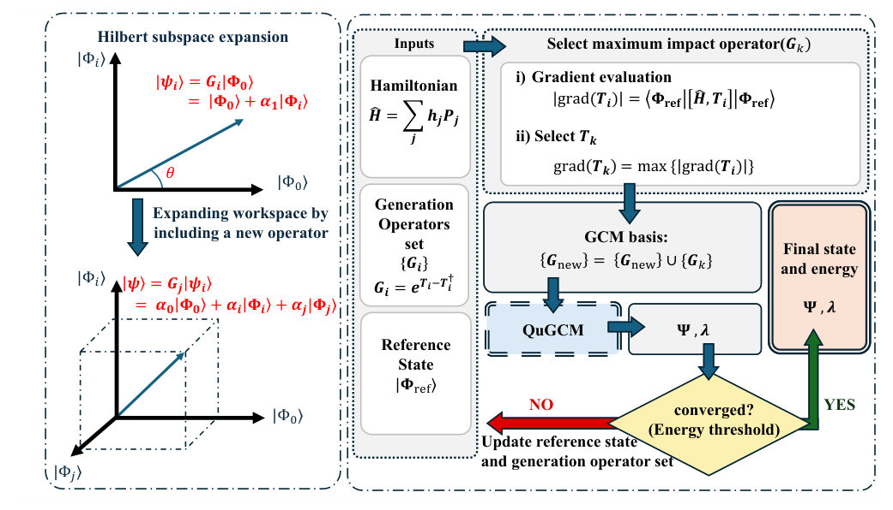
<figcaption class="paper-figure-caption"><b>Fig 2.</b> FIG. 2. Flowchart for an adaptive quantum algorithm ADAPT-GCIM that iteratively refines the basis set for the QuGCM. The algorithm evaluates the impact of Generation Operators on the system’s energy, selects the most influential one to add to the QuGCM basis, and then solves the GCM equations. This loop continues until the calculated energy converges, resulting in the final state and energy of the system. On the left, a conceptual diagram of the adaptive Hilbert space expansion. The ADAPT algorithm iteratively expands the Hilbert subspace, starting from an initial 2D basis defined by a reference state |Φ0⟩and a generated state |Φi⟩. In each step, a new basis vector |Φj⟩is added by selecting...</figcaption>
</figure>
<figure class="paper-figure-card">
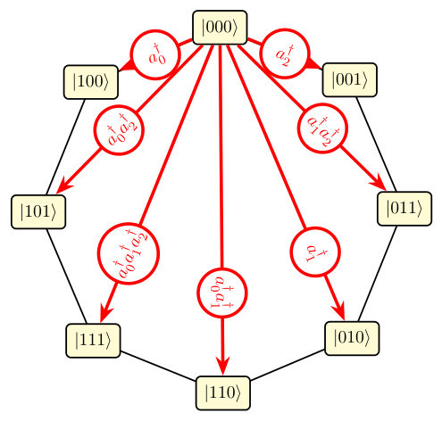
<figcaption class="paper-figure-caption"><b>Fig 3.</b> FIG. 3. Schematic diagram showing all conversions from a reference in GC encoding.</figcaption>
</figure>
<figure class="paper-figure-card">
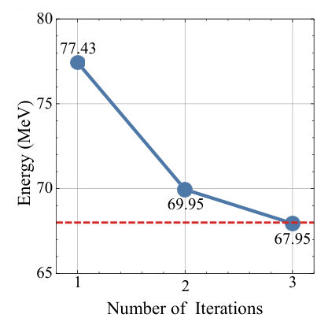
<figcaption class="paper-figure-caption"><b>Fig 4.</b> FIG. 4. Convergence of the deuteron ground-state energy with ADAPT-GCIM iterations. The method achieves rapid convergence to the expected ground-state value (shown as the dashed line) within three iterations.</figcaption>
</figure>
<figure class="paper-figure-card">
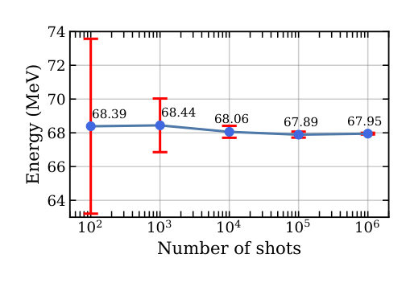
<figcaption class="paper-figure-caption"><b>Fig 5.</b> FIG. 5. Ground-state energy estimates for the deuteron sys- tem as a function of the number of measurement shots. Sta- tistical fluctuations at low shot counts decrease as the number of shots increases, with results converging toward the exact value.</figcaption>
</figure>
</div>
<p><strong>Summary.</strong> This work adapts the Generator Coordinate Method (GCM) for simulating correlated nuclear structure problems on noisy intermediate-scale quantum (NISQ) devices. By introducing QuGCM and ADAPT-GCIM, the authors provide a resource-efficient alternative to variational methods. The results confirm that this hybrid approach offers a viable path toward accurately modeling complex many-body physics using current quantum hardware limitations in mind.</p>
<p><strong>Why it may be interesting.</strong> It directly addresses how established, complex many-body theories from nuclear physics can be mapped onto near-term quantum hardware using advanced algorithmic techniques like adaptive basis selection.</p>
<details>
<summary>Detailed structure</summary>
<p><strong>Main problem.</strong> The primary goal is simulating low-lying eigenstates of complex nuclear systems by incorporating essential correlations beyond mean-field theory.</p>
<p><strong>Main result.</strong> Both QuGCM and ADAPT-GCIM successfully reproduce classical energy spectra, demonstrating a practical and scalable quantum approach robust to current hardware noise limitations.</p>
<p><strong>Method.</strong> A hybrid quantum-classical framework is employed using the Quantum Generator Coordinate Method (QuGCM) combined with an adaptive basis selection technique (ADAPT-GCIM).</p>
<p><strong>Model / system.</strong> The system studied is nuclear matter, modeled using Hamiltonians for specific nuclei like $^6	ext{Li}$ and $^{38}	ext{Ar}$, starting from Hartree-Fock reference states.</p>
<p><strong>Key observables.</strong> Energy spectrum (ground and excited state energies).</p>
<p><strong>Important parameters / regimes.</strong> The complexity of the Hilbert space, which is managed by ADAPT-GCIM's gradient-based selection process.</p>
<p><strong>Assumptions / limitations.</strong> The approach assumes that current NISQ devices can handle the required circuit depth for generating necessary basis states and overlap/Hamiltonian kernels.</p>
<p><strong>Figures summary.</strong> Not specified in detail, but notes mention comparisons of Pauli operator expansions using Jordan-Wigner vs. Gray Code mappings.</p>
<p><strong>Paper structure.</strong> The paper details the theoretical foundation (GCM, HF, UCCSD), outlines the quantum implementation steps for calculating necessary kernels on qubits, and compares different encoding strategies (JW vs GC) to optimize circuit depth.</p>
</details>
<details>
<summary>Abstract</summary>
<p>Based on the Generator Coordinate Method (GCM), we use a Quantum GCM (QuGCM) within a hybrid quantum-classical framework to simulate low-lying eigenstates of nuclear systems on quantum devices. The generator basis states are constructed from Hartree-Fock (HF) reference states, excited via symmetry-adapted unitary coupled-cluster (UCC) operators. These states are prepared as non-orthogonal quantum circuits and measured pairwise to compute the required overlap and Hamiltonian kernels. The resulting data is processed using a classical generalized-eigenvalue solver, following the GCM formalism, to extract the system's energy spectrum. To enhance efficiency and reduce circuit depth, we apply the Adaptive Generator Coordinate Inspired method (ADAPT-GCIM), which iteratively selects generator excitations based on energy gradients, thereby avoiding the need to explore the full Hilbert space. Our implementation is applied to nuclear systems, specifically the deuteron with the Reid68 potential and shell-model Hamiltonians of $^6$Li and $^{38}$Ar. For each system, both the QuGCM and ADAPT-GCIM methods produce energy spectra in agreement with classical diagonalization results, demonstrating robustness even under noise and limited-depth constraints. Additionally, we compare fermionic encoding strategies, specifically Jordan-Wigner (JW) transformations of one-hot (OH) encoding and Gray code (GC) mappings, and show that GC encoding reduces circuit complexity and improves fidelity during multi-reference state preparation. Our findings indicate that QuGCM and ADAPT-GCIM provide a practical and scalable path toward simulating correlated quantum systems, with lesser vulnerability to noise and better compatibility with the limitations of current quantum hardware.</p>
</details>
<p><sub><a href="#top">↑ back to top</a></sub></p>

<p><a id="paper-2608.00637"></a></p>
<h3 id="remarks-on-regular-approximations-to-the-robin-aharonov-bohm-hamiltonian"><a href="http://arxiv.org/abs/2608.00637v1">Remarks on Regular Approximations to the Robin Aharonov-Bohm Hamiltonian</a></h3>
<p><strong>Authors:</strong> Cesar R. de Oliveira<br>
<strong>Type:</strong> theory · <strong>Category:</strong> other · <strong>PDF:</strong> <a href="https://arxiv.org/pdf/2608.00637v1">https://arxiv.org/pdf/2608.00637v1</a><br>
<strong>Analysis basis:</strong> full PDF text, analyzed in chunks</p>
<div class="figure-strip-hint">↔ Scroll figures horizontally</div>
<div class="paper-figures-scroll">
<figure class="paper-figure-card">
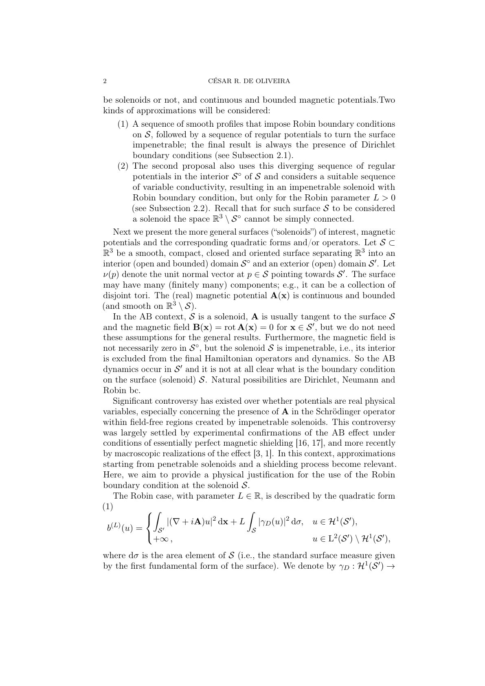
<figcaption class="paper-figure-caption"><b>Fig 1.</b> Low-resolution page preview, page 2</figcaption>
</figure>
<figure class="paper-figure-card">
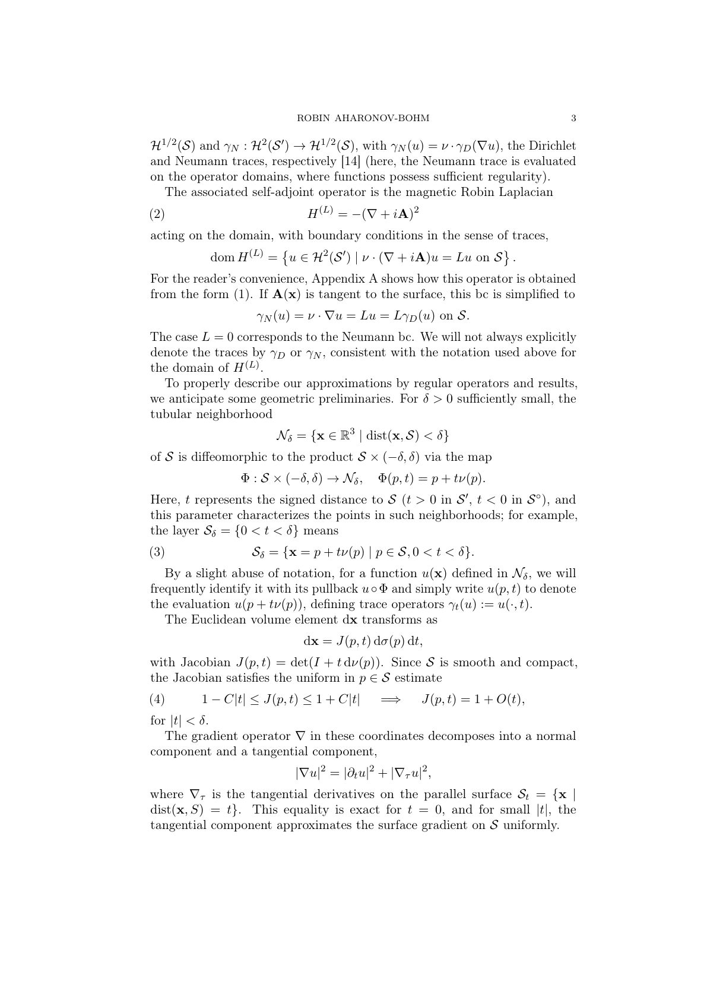
<figcaption class="paper-figure-caption"><b>Fig 2.</b> Low-resolution page preview, page 3</figcaption>
</figure>
<figure class="paper-figure-card">
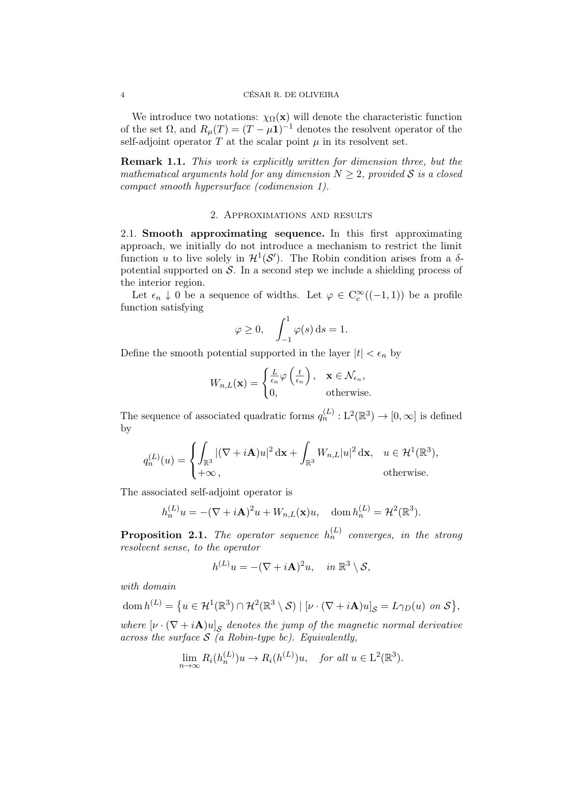
<figcaption class="paper-figure-caption"><b>Fig 3.</b> Low-resolution page preview, page 4</figcaption>
</figure>
<figure class="paper-figure-card">
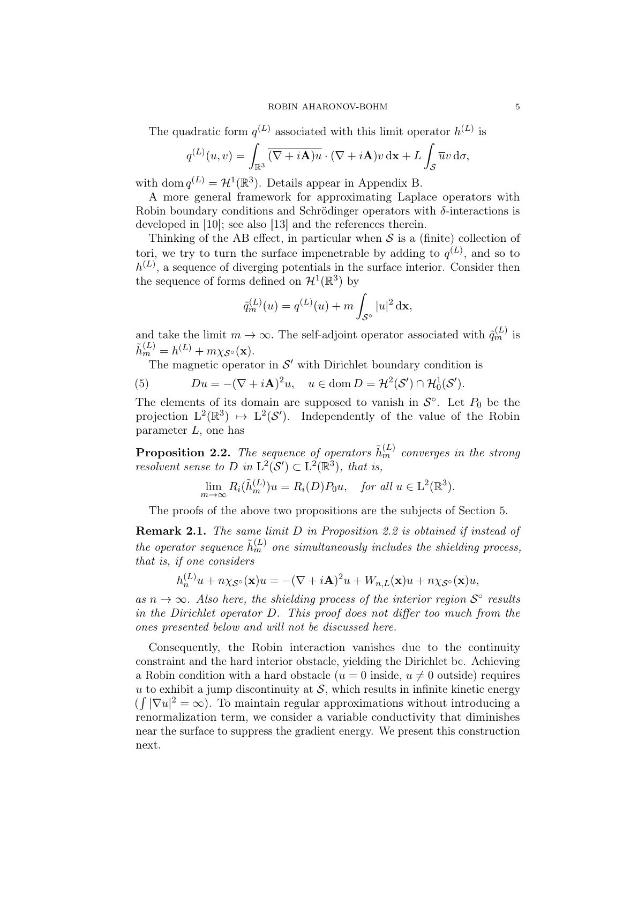
<figcaption class="paper-figure-caption"><b>Fig 4.</b> Low-resolution page preview, page 5</figcaption>
</figure>
<figure class="paper-figure-card">
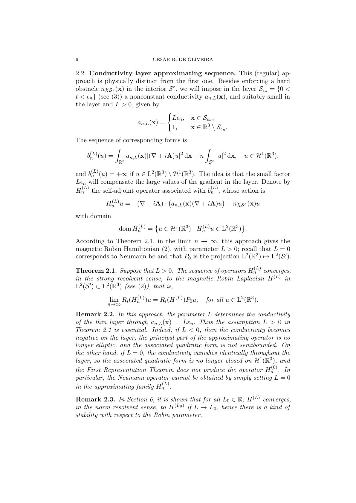
<figcaption class="paper-figure-caption"><b>Fig 5.</b> Low-resolution page preview, page 6</figcaption>
</figure>
</div>
<p><strong>Summary.</strong> This paper provides a detailed mathematical analysis proving that physically motivated approximations—such as using smooth potentials or variable conductivities near a solenoid—converge correctly to the true magnetic Robin Aharonov-Bohm Hamiltonian. By employing $\Gamma$-convergence, the authors rigorously establish the strong resolvent convergence of these approximate operators, confirming the physical validity of the model in the limit.</p>
<p><strong>Why it may be interesting.</strong> The rigorous mathematical treatment of boundary conditions in quantum mechanics, especially involving magnetic fields and singular geometries like solenoids, is crucial for developing accurate theoretical models in condensed matter physics (e.g., superconducting junctions).</p>
<details>
<summary>Detailed structure</summary>
<p><strong>Main problem.</strong> The paper investigates the mathematical rigorousness of approximating the magnetic Aharonov-Bohm Hamiltonian, particularly when incorporating Robin boundary conditions at a solenoid.</p>
<p><strong>Main result.</strong> It establishes that approximations using smooth potentials or variable conductivity layers converge in the strong resolvent sense to the true magnetic Robin Laplacian operator. Furthermore, it shows stability under parameter variations.</p>
<p><strong>Method.</strong> The primary mathematical tool is $\Gamma$-convergence of quadratic forms, which is used to prove the convergence of associated self-adjoint operators in the strong resolvent sense.</p>
<p><strong>Model / system.</strong> The model involves a particle governed by a Schrödinger operator with a magnetic vector potential $A$ and confined near a toroidal solenoid. The Hamiltonian incorporates a Robin boundary condition ($
u \cdot (
abla+ iA)u = Lu$) at the solenoid's surface.</p>
<p><strong>Key observables.</strong> The self-adjoint operators (Hamiltonians) associated with the system, particularly their resolvents $R_i(H)$.</p>
<p><strong>Important parameters / regimes.</strong> Robin parameter $L$, layer thickness $\epsilon_n 	o 0$, and magnetic potential $A$.</p>
<p><strong>Assumptions / limitations.</strong> The analysis assumes the existence of continuous and bounded magnetic potentials and relies on techniques like Green's identity and trace inequalities for convergence proofs.</p>
<p><strong>Paper structure.</strong> The paper develops approximations in two main ways: using smooth potential layers (Section 2.1) and using variable conductivity layers with an interior hard obstacle (Section 2.2). Convergence is rigorously established via $\Gamma$-convergence, leading to the final characterization of the Robin boundary condition.</p>
</details>
<details>
<summary>Abstract</summary>
<p>In the space $\mathbb R^3$, for Robin parameter $L>0$, it is shown that there is a family of Schrödinger operators with penetrable toroidal solenoid and variable conductivity that approximates the magnetic Aharonov-Bohm operator with a Robin boundary condition at the solenoid (border). It is also shown that approximations via smooth potentials and then a barrier in the solenoid interior give Dirichlet boundary conditions. The approximations are in the strong resolvent sense and obtained through the $Γ$-convergence technique, and they hold for the more general setting of smooth, closed and compact surfaces and continuous and bounded magnetic potentials.</p>
</details>
<p><sub><a href="#top">↑ back to top</a></sub></p>

<p><a id="paper-2608.00601"></a></p>
<h3 id="symplectic-barnes-wall-gkp-codes-deterministic-math1508math-decoding-and-logarithmic-rate-scaling"><a href="http://arxiv.org/abs/2608.00601v1">Symplectic Barnes-Wall GKP Codes: Deterministic $O(N \log^2 N)$ Decoding and Logarithmic Rate Scaling</a></h3>
<p><strong>Authors:</strong> Shanxiang Lyu<br>
<strong>Type:</strong> theory · <strong>Category:</strong> quantum information and computing · <strong>PDF:</strong> <a href="https://arxiv.org/pdf/2608.00601v1">https://arxiv.org/pdf/2608.00601v1</a><br>
<strong>Analysis basis:</strong> full PDF text, analyzed in chunks</p>
<div class="figure-strip-hint">↔ Scroll figures horizontally</div>
<div class="paper-figures-scroll">
<figure class="paper-figure-card">
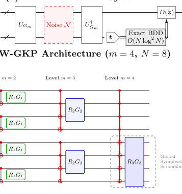
<figcaption class="paper-figure-caption"><b>Fig 1.</b> FIG. 1. Operational cycle and hardware architecture. (a) Logical modes and GKP ancillae are globally entangled via UGm; localized burst noise is scattered by U † Gm into diffuse background syndrome t. A deterministic O(N log2 N) classi- cal bounded-distance decoder computes the optimal recovery displacement D(ˆz). (b) The generation matrix Gm operates via a hierarchical butterfly network of symplectic entangling gates (RmGm), maximally scrambling phase space to pack R = 1</figcaption>
</figure>
<figure class="paper-figure-card">
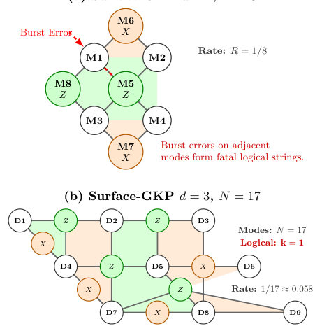
<figcaption class="paper-figure-caption"><b>Fig 2.</b> FIG. 2. Limitations of the 2D Surface-GKP code. (a) In a d = 2 planar layout, a localized burst error (red dashed line) on adjacent modes instantly forms a fatal logical string. (b) Scaling to d = 3 suppresses errors but requires quadratic expansion (N = 17) while yielding exactly one logical qubit— illustrating the vanishing rate R ∼O(1/ √</figcaption>
</figure>
<figure class="paper-figure-card">
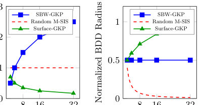
<figcaption class="paper-figure-caption"><b>Fig 3.</b> FIG. 3. Theoretical scaling comparison of multimode GKP architectures (schematic). (a) Rate k/N vs. N: SBW-GKP (blue, 1</figcaption>
</figure>
</div>
<p><strong>Summary.</strong> This paper introduces symplectic Barnes-Wall GKP codes that achieve an optimal logarithmic encoding rate ($R \propto \log N$) while maintaining a constant error protection distance ($\Delta^2=1$). By utilizing the structure of the Barnes-Wall lattice, they provide a deterministic and efficient decoding scheme for continuous-variable quantum error correction.</p>
<p><strong>Why it may be interesting.</strong> This work provides a concrete, high-performance theoretical blueprint for fault-tolerant quantum computing using CV systems, directly impacting hardware requirements for photonic or superconducting implementations.</p>
<details>
<summary>Detailed structure</summary>
<p><strong>Main problem.</strong> Designing practical, high-dimensional Gottesman-Kitaev-Preskill (GKP) codes for quantum error correction in continuous-variable systems while overcoming the limitations of rate-distance trade-offs.</p>
<p><strong>Main result.</strong> The authors construct an explicit family of GKP codes based on the Barnes-Wall lattice achieving a logarithmic encoding rate ($R = rac{1}{2}\log_2 N$) with a constant code distance ($\Delta^2=1$).</p>
<p><strong>Method.</strong> They use a recursive generator structure to realize a symplectic embedding of the Barnes-Wall lattice, enabling a deterministic $O(N\log^2 N)$ decoder.</p>
<p><strong>Model / system.</strong> The system involves continuous-variable (CV) bosonic modes encoded into GKP states defined by lattices $\Lambda \subset \mathbb{R}^{2N}$. The construction leverages the symplectic structure and global entanglement properties of the Barnes-Wall lattice.</p>
<p><strong>Key observables.</strong> Encoding Rate ($R = rac{1}{2}\log_2 N$), Code Distance ($\Delta^2=1$), Decoding Complexity ($O(N\log^2 N)$).</p>
<p><strong>Important parameters / regimes.</strong> The constant distance $\Delta^2=1$ represents a specific, non-scaling protection level achieved at the expense of rate scaling.</p>
<p><strong>Assumptions / limitations.</strong> The construction requires hardware supporting non-local modular connectivity to implement the global syndrome extraction and decoding process.</p>
<p><strong>Figures summary.</strong> Figures compare code families (e.g., Surface-GKP vs SBW-GKP) showing superior rate scaling for the proposed method, and illustrate the operational cycle involving global entanglement.</p>
<p><strong>Paper structure.</strong> The paper establishes the problem by reviewing limitations of existing codes, introduces the symplectic realization of the Barnes-Wall lattice via a recursive generator, proves the resulting code parameters (rate and distance), and details the transformation of the decoding problem from the dual lattice to the primal lattice for efficient computation.</p>
</details>
<details>
<summary>Abstract</summary>
<p>We construct an explicit symplectic realization of the Barnes-Wall lattice that yields a family of multimode Gottesman-Kitaev-Preskill (GKP) codes with encoding rate $R = \frac{1}{2}\log_2 N$ and a deterministic $O(N\log^2 N)$ bounded-distance decoder. The recursive generator $G_{m+1} = \bigl(\begin{smallmatrix} G_m & 0 \\ G_m & R_m G_m \end{smallmatrix}\bigr)$ with $R_m = I + Ω$ simultaneously guarantees symplectic integrality for valid quantum stabilizers and preserves the exact Barnes-Wall decoding structure through a chain of isometric isomorphisms. The code distance is constant at $Δ^2 = 1$ (in units of $2π$), representing an explicit distance--rate tradeoff in which logarithmic encoding efficiency is achieved at the cost of non-scaling protection. This construction provides a deterministic, space-efficient paradigm for GKP error correction in platforms supporting non-local modular connectivity.</p>
</details>
<p><sub><a href="#top">↑ back to top</a></sub></p>

<p><a id="paper-2608.02334"></a></p>
<h3 id="synthesis-and-structural-validation-of-close-to-stoichiometric-nitemath1525math-single-crystals"><a href="http://arxiv.org/abs/2608.02334v1">Synthesis and structural validation of close-to-stoichiometric NiTe$_2$ single crystals</a></h3>
<p><strong>Authors:</strong> T. Tirasutt, L. H. Tjeng, A. C. Komarek<br>
<strong>Type:</strong> experiment · <strong>Category:</strong> strongly correlated electrons · <strong>PDF:</strong> <a href="https://arxiv.org/pdf/2608.02334v1">https://arxiv.org/pdf/2608.02334v1</a><br>
<strong>Analysis basis:</strong> full PDF text, analyzed in chunks</p>
<div class="figure-strip-hint">↔ Scroll figures horizontally</div>
<div class="paper-figures-scroll">
<figure class="paper-figure-card">
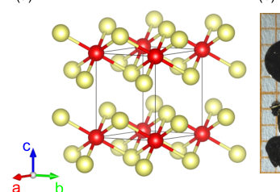
<figcaption class="paper-figure-caption"><b>Fig 1.</b> Figure 1: (a) The crystal structure of 1T-NiTe2 in the van der Waals layered phase, with the unit cell shown (red: Ni, yellow: Te), visualized using VESTA [21]. (b) Photograph of as-grown, millimeter-sized NiTe2 crystals on mm-paper, and (c) of a smaller NiTe2 single crystal used for the single crystal XRD mea- surement.</figcaption>
</figure>
<figure class="paper-figure-card">
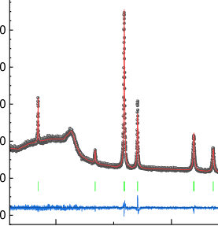
<figcaption class="paper-figure-caption"><b>Fig 2.</b> Figure 2: Powder X-ray diffraction patterns of NiTe2 with Rietveld fit. The bump-like features below 2Θ ∼26◦originate from the sample holder for air- sensitive samples; χ2: 1.74, Bragg R-factor: 2.65%, z(Te1) = 0.2534(4).</figcaption>
</figure>
<figure class="paper-figure-card">
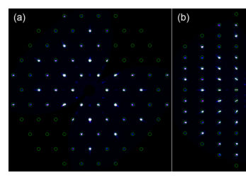
<figcaption class="paper-figure-caption"><b>Fig 3.</b> Figure 3: Precession maps of single crystal X-ray diffraction measurements of NiTe2 for the (a) (hk0), (b) (h0l) and (c) (0kl) planes of reciprocal space.</figcaption>
</figure>
</div>
<p><strong>Summary.</strong> This work reports the successful synthesis and detailed structural validation of stoichiometric $  ext{NiTe}_2$ single crystals using Chemical Vapor Transport. By employing both powder and single-crystal XRD, the authors confirmed the material's structure and established a highly reliable crystallographic benchmark for this promising type-II Dirac semimetal candidate.</p>
<p><strong>Why it may be interesting.</strong> While focused on crystallography, establishing precise structural parameters for novel 2D materials like TMDCs is foundational knowledge required before any advanced quantum transport or electronic correlation studies can be performed.</p>
<details>
<summary>Detailed structure</summary>
<p><strong>Main problem.</strong> The primary goal was to synthesize high-quality, close-to-stoichiometric single crystals of $ ext{NiTe}_2$ and establish a reliable structural benchmark for future physical property studies.</p>
<p><strong>Main result.</strong> Single crystal XRD confirmed the structure is close to stoichiometric, showing no evidence of interstitial nickel atoms. The lattice parameters were successfully determined using both powder and single-crystal techniques.</p>
<p><strong>Method.</strong> The material was synthesized via Chemical Vapor Transport (CVT), followed by rigorous structural characterization using Powder X-ray Diffraction (XRD) and high-precision Single Crystal XRD.</p>
<p><strong>Model / system.</strong> The physical system is the transition metal dichalcogenide $    ext{NiTe}_2$, which adopts a 1T-type van der Waals layered structure ($Par{3}m1$). It is noted as a candidate material for studying type-II Dirac semimetallic behavior.</p>
<p><strong>Key observables.</strong> Lattice parameters ($a, c$), occupancy of $  ext{Ni}$ atoms at the primary site ($   ext{Ni}1$), and confirmation regarding interstitial nickel occupation ($    ext{Ni}2$).</p>
<p><strong>Important parameters / regimes.</strong> The stoichiometry is confirmed to be close to ideal, with refined $ ext{Ni}1$ occupancy near 0.988(9).</p>
<p><strong>Assumptions / limitations.</strong> Caution is advised when interpreting EDX results due to inherent accuracy limitations, and the positional parameter $z(	ext{Te})$ from powder XRD may suffer from preferred orientation effects.</p>
<p><strong>Figures summary.</strong> Figure 1 shows crystal structure models and photos of grown crystals. Figure 2 presents the Powder XRD pattern with Rietveld fitting for lattice parameters. Figure 3 displays precession maps from single-crystal measurements across key crystallographic planes.</p>
<p><strong>Paper structure.</strong> The paper details the synthesis process using CVT, followed by a comprehensive structural analysis involving both powder and single-crystal XRD refinement to validate the crystal structure and stoichiometry of $    ext{NiTe}_2$.</p>
</details>
<details>
<summary>Abstract</summary>
<p>We report the synthesis of stoichiometric NiTe$_{2}$ single crystals via chemical vapor transport together with precise structural characterization. A combined analysis using powder X-ray diffraction (XRD) and single crystal XRD was performed to determine lattice parameters and structural details. High-resolution single crystal XRD reveals no evidence of interstitial nickel, confirming a close-to-stoichiometric composition. This work establishes a reliable benchmark for the crystal structure of stoichiometric NiTe$_{2}$, offering a reference for future studies on its physical properties.</p>
</details>
<p><sub><a href="#top">↑ back to top</a></sub></p>

<p><a id="paper-2608.01887"></a></p>
<h3 id="the-pangaea-architecture-fault-tolerant-heterogeneous-topological-codes-via-a-quantum-bus"><a href="http://arxiv.org/abs/2608.01887v1">The Pangaea Architecture: Fault-Tolerant Heterogeneous Topological Codes via a Quantum Bus</a></h3>
<p><strong>Authors:</strong> Sheir Yarkoni, Chen Scheim, Daniel Hakshuri, Nadav Katz<br>
<strong>Type:</strong> theory · <strong>Category:</strong> quantum information and computing · <strong>PDF:</strong> <a href="https://arxiv.org/pdf/2608.01887v1">https://arxiv.org/pdf/2608.01887v1</a><br>
<strong>Analysis basis:</strong> full PDF text, analyzed in chunks</p>
<div class="figure-strip-hint">↔ Scroll figures horizontally</div>
<div class="paper-figures-scroll">
<figure class="paper-figure-card">
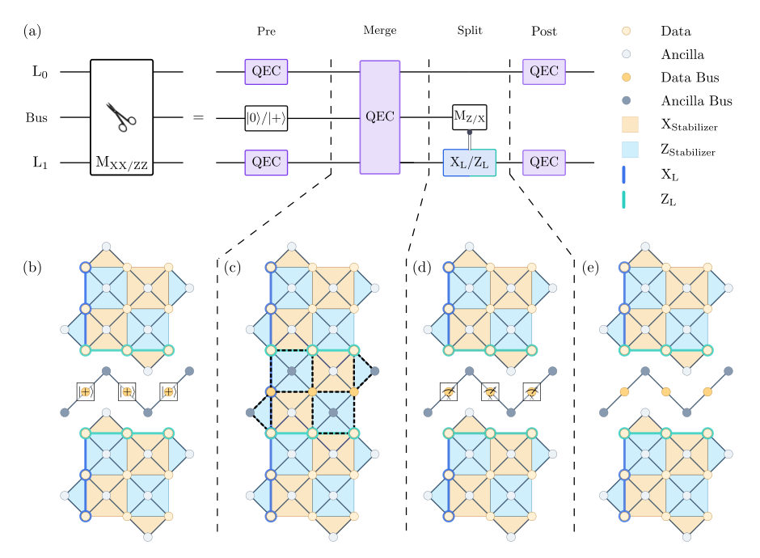
<figcaption class="paper-figure-caption"><b>Fig 1.</b> FIG. 1. Lattice surgery between two distance-3 rotated surface-code patches via a quantum bus, shown explicitly for an MZZ interaction. (a) Circuit-level diagram defining the main stages of lattice surgery, including fault-tolerant stabilizer measurements, which for future use we denote as the “scissors” operator, composed of: pre-op, merge, split, and post-op. (b)-(e) Equivalent schematic diagrams defining the four stages of the scissors operator. Data qubits participating in each logical XL(ZL) operator are highlighted in blue (turquoise).</figcaption>
</figure>
<figure class="paper-figure-card">
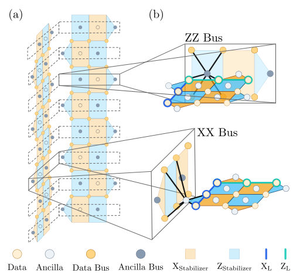
<figcaption class="paper-figure-caption"><b>Fig 2.</b> FIG. 2. Three-dimensional layout of two orthogonal quantum buses and their physical connections to two non- adjacent logical qubits. (a) Two orthogonal bus strips form a three-dimensional tower to enable long-distance interactions. Dashed lines highlight the respective “bus slots”, where each slot accepts a single code patch. Yellow nodes denote bus data qubits, gray nodes are ancilla qubits, and dashed nodes are “missing” qubits where rough boundaries of the code patch are inserted into. The ZZ-bus (XX-bus) is aligned with each surface-code patch’s logical ZL (XL) operator for native MZZ (MXX) parity measurements. (b) Zoomed-in diagram emphasizing the code patch-to-bus connectivity which...</figcaption>
</figure>
<figure class="paper-figure-card">
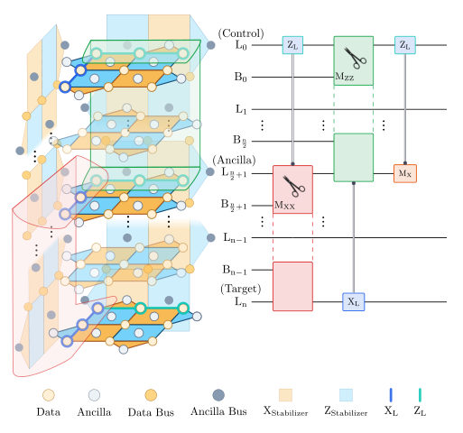
<figcaption class="paper-figure-caption"><b>Fig 3.</b> FIG. 4. Full measurement-based CNOT between non- adjacent logical qubits using the quantum bus, realized as a sequence of joint parity measurements (MXX, MZZ) fol- lowed by an ancilla readout, built from operational primitives defined in Fig. 1. Each colored wrapping strip on the left side illustrates the scissors operator on the relevant logical qubit patches.</figcaption>
</figure>
<figure class="paper-figure-card">

<figcaption class="paper-figure-caption"><b>Fig 4.</b> FIG. 3. Circuit-level description of a measurement-based CNOT using joint parity measurements. An ancilla medi- ates the gate between the control and target qubits. Red denotes the MXX measurement between ancilla and target, green denotes the MZZ measurement between control and an- cilla, orange denotes the final ancilla MX measurement, and blue denotes the relevant conditional Pauli-frame updates.</figcaption>
</figure>
<figure class="paper-figure-card">
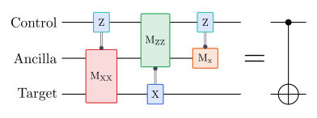
<figcaption class="paper-figure-caption"><b>Fig 5.</b> Fig. 4 shows a schematic of a bus-mediated CNOT. We implement observables MXX = X (Ancilla)X (Target)</figcaption>
</figure>
</div>
<p><strong>Summary.</strong> The paper introduces Pangaea, a novel fault-tolerant architecture that uses a quantum bus to connect remote patches of heterogeneous topological quantum codes. This design overcomes the scaling limitations of planar lattice surgery by achieving superior qubit resource estimates for multi-qubit operations. It establishes a scalable pathway toward building large-scale, three-dimensional quantum computers.</p>
<p><strong>Why it may be interesting.</strong> This work is highly relevant as it proposes a concrete hardware blueprint (the quantum bus) to overcome fundamental connectivity bottlenecks in implementing large-scale topological quantum error correction codes, which is central to building practical quantum computers.</p>
<details>
<summary>Detailed structure</summary>
<p><strong>Main problem.</strong> The primary challenge is developing a scalable, fault-tolerant quantum architecture to perform logical operations between remote patches of heterogeneous topological codes while overcoming the connectivity limitations of planar lattice surgery.</p>
<p><strong>Main result.</strong> The proposed Pangaea architecture utilizes a quantum bus, achieving a significant scaling improvement by requiring only O(dN_L) physical qubits for multi-qubit interactions compared to O(d^2N_L) in traditional 2D setups. This allows for the construction of scalable, three-dimensional fault-tolerant quantum computing modules.</p>
<p><strong>Method.</strong> The method involves using an auxiliary gauge-code strip (the quantum bus) to mediate logical operations by reconstructing joint logical operators through carefully designed measurements, generalizing lattice surgery into a 3D process.</p>
<p><strong>Model / system.</strong> The system is the Pangaea architecture, which connects multiple patches of different topological codes (e.g., surface and color codes) via a quantum bus. This bus acts as an auxiliary gauge-code strip that facilitates long-range logical connectivity.</p>
<p><strong>Key observables.</strong> Logical error rate ($p_L$), physical qubit count scaling ($O(dN_L)$ vs $O(d^2N_L)$), and the successful implementation of multi-qubit Pauli operations (e.g., CNOT, MZZ).</p>
<p><strong>Important parameters / regimes.</strong> Distance ($d$) of the topological codes, number of logical qubits ($N_L$), and physical error rates ($p_{phys}$). The scaling factor improvement is quantified at the 50-logical-qubit scale.</p>
<p><strong>Assumptions / limitations.</strong> The architecture assumes that nearest-neighbor physical connectivity can be maintained throughout the process, simplifying construction compared to proposals requiring complex long-range physical links. It also relies on the ability to perform joint parity measurements across different code families.</p>
<p><strong>Figures summary.</strong> Figures illustrate the circuit-level stages of lattice surgery ('scissors' operator) using the bus for MZZ interactions; diagrams show 3D towers connecting non-adjacent qubits, and schematics detail surface-to-surface and surface-to-color patch connections via the bus.</p>
<p><strong>Paper structure.</strong> The paper introduces Pangaea, detailing how the quantum bus mediates operations by reformulating lattice surgery. It mathematically derives the joint parity measurements required for long-range interactions, analyzes the scaling benefits over traditional methods, verifies fault tolerance through simulations, and discusses the resulting structure of merged heterogeneous codes.</p>
</details>
<details>
<summary>Abstract</summary>
<p>We introduce Pangaea, a fault-tolerant quantum architecture that uses a quantum bus to mediate logical operations between remote patches of two-dimensional topological codes. The bus is an auxiliary gauge-code strip whose measurements reconstruct joint logical operators while preserving nearest-neighbor physical connectivity. Enabling native heterogeneous topological codes and multi-qubit Pauli operations, the quantum bus can be interpreted as a three-dimensional generalization of lattice surgery. We require only $O(dN_L)$ physical qubits to implement multi-qubit interactions for $N_L$ distance-$d$ logical qubits, compared to $O(d^2N_L)$ of traditional two-dimensional architectures. At the 50-logical-qubit scale, Pangaea uses up to $10\times$ fewer physical qubits than planar surface-code architectures at matched logical error rates. We verify fault-tolerance of long-range measurement-based CNOT primitives for both surface--surface and surface--color joint parity measurements using pseudo-threshold simulations. We use this protocol to construct a native heterogeneous 15-to-1 magic-state distillation module using the quantum bus. These results establish Pangaea as a scalable architecture for three-dimensional fault-tolerant quantum computing that resolves the routing bottleneck of planar lattice surgery.</p>
</details>
<p><sub><a href="#top">↑ back to top</a></sub></p>
</details>
<h2 id="secondary-cond-mat-archives">Secondary cond-mat archives</h2>
<p><em>Papers from cond-mat.mtrl-sci, mes-hall, other, soft, supr-con. These archives are de-prioritized — they appear at the end regardless of relevance score.</em></p>
<h3 id="relevant-in-secondary-archives-46">Relevant in secondary archives (46)</h3>

<p><a id="paper-2608.02165"></a></p>
<h3 id="charge-tunable-optical-nonlinearity-of-moire-exciton-polaritons"><a href="http://arxiv.org/abs/2608.02165v1">Charge Tunable Optical Nonlinearity of Moiré Exciton-Polaritons</a></h3>
<p><strong>Authors:</strong> Zhijie Li, Kok Wee Song, Jens-Christian Drawer, Vita Solovyeva, Martin Esmann, Niklas Nilius, Muhammad Sufyan Ramzan, Caterina Cocchi, Falk Eilenberger, Takashi Taniguchi, Kenji Watanabe, Atanu Patra, Subhamoy Sahoo, Simon Betzold, Sven Höfling, Alexander Högele, Oleksandr Kyriienko, Christian Schneider, Bo Han<br>
<strong>Type:</strong> both · <strong>Category:</strong> other · <strong>PDF:</strong> <a href="https://arxiv.org/pdf/2608.02165v1">https://arxiv.org/pdf/2608.02165v1</a><br>
<strong>Analysis basis:</strong> full PDF text, analyzed in chunks
<strong>Topic relevance:</strong> 🔥 <code>analog quantum simulation</code> <strong>4/5</strong> · 🔥 <code>correlated cavity matter</code> <strong>4/5</strong> · <code>driven-dissipative phase transition</code> <strong>3/5</strong> · <code>methods for driven-dissipative</code> <strong>3/5</strong> · <code>quantum optics experiment</code> <strong>3/5</strong> · <code>Tavis-Cummings &amp; cavity-many-emitter</code> <strong>2/5</strong> · <code>non-equilibrium dynamics</code> <strong>2/5</strong> · <code>spintronics-quantum-optics interface</code> <strong>2/5</strong> · <code>Keldysh / 2PI / non-Gaussian methods</code> <strong>1/5</strong> · <code>correlated / nonlocal dissipation</code> <strong>1/5</strong> · <code>entanglement &amp; information structure</code> <strong>1/5</strong> · <code>non-equilibrium universality</code> <strong>1/5</strong></p>
<div class="figure-strip-hint">↔ Scroll figures horizontally</div>
<div class="paper-figures-scroll">
<figure class="paper-figure-card">
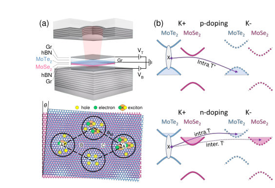
<figcaption class="paper-figure-caption"><b>Fig 1.</b> FIG. 1. (a) Top panel: schematics of open optical micro- cavity with a dual-gated MoTe2-MoSe2 HBL. Bottom panel: schematics of exciton (X) and charge filling into the high- symmetry point A of the moir´e superlattices for a R-type HBL. (b) Type-II band alignment in R-type MoTe2-MoSe2 HBL. Trion (T) states appear due to charge doping. Solid (dashed) lines represent spin-up (-down) bands.</figcaption>
</figure>
<figure class="paper-figure-card">
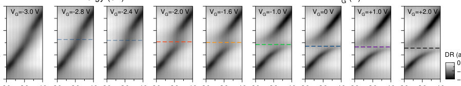
<figcaption class="paper-figure-caption"><b>Fig 2.</b> FIG. 2. (a) Gate tunable PL of MoTe2 ML region (top) and MoTe2-MoSe2 HBL (bottom) of the charge tunable device, with negative (n), neutral (i) and positive (p) doping regimes. (b) Cavity detuning DR at different VG. All graphs share the same color bar. The dashed lines mark moir´e exciton resonances. (c) VG-dependent exciton energies in HBL fitted from PL in (a) and DR in (b). (d) VG-dependent Rabi splittings (ℏΩ) in HBL. Color symbols correspond to the VG applied in Fig. 3(a). The Rabi gap energies of two ungated MoTe2 MLs are shown by cross symbols.</figcaption>
</figure>
</div>

<p><strong>Summary.</strong> The authors demonstrate electrical control over the nonlinear optical response of moiré exciton-polaritons using a gated $ ext{MoTe}_2-    ext{MoSe}_2$ heterobilayer. By inducing charge doping, they show that the required excitation density to reach saturation can be drastically lowered compared to neutral conditions. This work combines advanced cavity QED experiments with microscopic theory rooted in Pauli blocking.</p>
<p><strong>Why it may be interesting.</strong> This work directly addresses open quantum systems dynamics, specifically cavity QED effects in solid-state materials. The ability to electrically tune nonlinearity via doping provides a powerful platform for studying many-body interactions in engineered quantum optical systems.</p>
<details>
<summary>Detailed structure</summary>
<p><strong>Main problem.</strong> The study focuses on demonstrating and understanding the <em>in-situ</em> electrical control of optical saturation-based nonlinearity in moiré exciton-polaritons.</p>
<p><strong>Main result.</strong> A small gate voltage can significantly reduce the required polariton density by an order of magnitude to achieve a comparable nonlinear saturation effect compared to charge-neutral conditions.</p>
<p><strong>Method.</strong> The research combines experimental measurements (PL, DR) on a gated heterobilayer with microscopic theoretical modeling based on Pauli blocking for moiré superlattices.</p>
<p><strong>Model / system.</strong> The physical system is a gate-controllable $    ext{MoTe}_2-    ext{MoSe}_2$ heterobilayer embedded in an open optical microcavity, forming moiré exciton-polaritons. The theory incorporates charge doping effects via Pauli blocking mechanisms.</p>
<p><strong>Key observables.</strong> Gate voltage ($V_G$) dependent photoluminescence (PL), differential reflectivity (DR) showing anti-crossings and saturation behavior, Rabi splittings, and excitonic Stokes shifts.</p>
<p><strong>Important parameters / regimes.</strong> Moiré superlattice constant $a_M \approx 4.2 	ext{ nm}$, gate voltage regimes (hole/electron doping), and the required polariton density for saturation ($ ext{dex-pol}$).</p>
<p><strong>Assumptions / limitations.</strong> The theoretical description successfully explains observations within the framework of Pauli blocking applied to moiré superlattices with charge occupancy.</p>
<p><strong>Figures summary.</strong> Figures illustrate schematics of the cavity/HBL, PL/DR spectra showing gate tunability and anti-crossings, and density-dependent DR curves demonstrating Rabi gap saturation effects.</p>
<p><strong>Paper structure.</strong> The paper builds context by reviewing related literature (citations) before presenting experimental results on charge tuning ($    ext{PL}$/$ ext{DR}$) and then using theory to explain the observed nonlinear saturation phenomena via Pauli blocking.</p>
</details>
<details>
<summary>Abstract</summary>
<p>Transition metal dichalcogenides represent a versatile platform to study strong light-matter interactions based on excitons and electrons in ordered lattices. Twist-engineering of moiré structures further enables the manipulation of the polaritonic nonlinearities via engineering the exciton landscape on the nanoscale. In this work, we demonstrate in-situ control of the optical saturation-based nonlinearity of moiré exciton-polaritons by phase space restriction via charge doping. Strong exciton-photon coupling is established in a gate-controllable MoTe$_2$-MoSe$_2$ heterobilayer, embedded in a spectrally-tunable open cavity. A small gate voltage can effectively lower the necessary polariton density by one order of magnitude to achieve a similar nonlinear saturation effect as in the charge-neutral case. Our microscopic description successfully explains the observed phenomena in the framework of Pauli blocking for the moiré superlattices with charge preoccupation.</p>
</details>
<p><sub><a href="#top">↑ back to top</a></sub></p>

<p><a id="paper-2608.02337"></a></p>
<h3 id="optical-switching-of-magnetic-order-in-few-layer-crsbr"><a href="http://arxiv.org/abs/2608.02337v1">Optical switching of magnetic order in few-layer CrSBr</a></h3>
<p><strong>Authors:</strong> Lukas Husel, Julian Trapp, Moritz Würf, Anna Rupp, Tim Wedl, Kenji Watanabe, Takashi Taniguchi, Iva Plutnarova, Zdenek Sofer, Alexander Högele<br>
<strong>Type:</strong> experiment · <strong>Category:</strong> other · <strong>PDF:</strong> <a href="https://arxiv.org/pdf/2608.02337v1">https://arxiv.org/pdf/2608.02337v1</a><br>
<strong>Analysis basis:</strong> full PDF text, analyzed in chunks
<strong>Topic relevance:</strong> 🔥 <code>exotic spin models in light-matter</code> <strong>4/5</strong> · 🔥 <code>spintronics-quantum-optics interface</code> <strong>4/5</strong> · <code>analog quantum simulation</code> <strong>3/5</strong> · <code>driven-dissipative phase transition</code> <strong>3/5</strong> · <code>non-equilibrium dynamics</code> <strong>2/5</strong> · <code>quantum optics experiment</code> <strong>2/5</strong> · <code>correlated / nonlocal dissipation</code> <strong>1/5</strong> · <code>methods for driven-dissipative</code> <strong>1/5</strong> · <code>non-equilibrium universality</code> <strong>1/5</strong> · <code>quantum measurements</code> <strong>1/5</strong></p>
<div class="figure-strip-hint">↔ Scroll figures horizontally</div>
<div class="paper-figures-scroll">
<figure class="paper-figure-card">
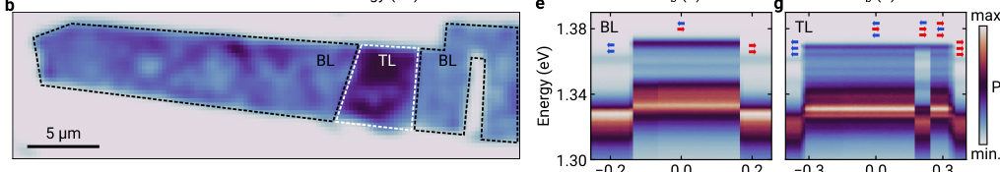
<figcaption class="paper-figure-caption"><b>Fig 1.</b> FIG. 1. Excitons in few-layer CrSBr as sensors of magnetic order. a, Schematic of CrSBr bilayer cooled below the Néel temperature, with the magnetic configuration indicated by the arrows. The insets show the crystal structure in the b-c and a-b planes. b, Confocal PL raster-scan map of CrSBr bilayer (BL) and trilayer (TL) regions encapsulated by hBN. The PL was integrated in the spectral range 1.327 −1.332 eV. c, Top panel: Spectra of bilayer PL (red line) and DR (blue line). Bottom panel: Trilayer PL (orange line) and DR (light green line). XA, XB and X′ B exciton energies are indicated by the dashed lines. d and e, Bilayer DR and PL spectra as a function of magnetic field Bb applied along...</figcaption>
</figure>
<figure class="paper-figure-card">
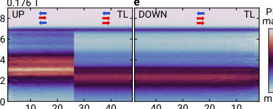
<figcaption class="paper-figure-caption"><b>Fig 2.</b> FIG. 2. Optical switching of magnetic spin-flip transi- tions. a, Schematic of the experiment: A non-resonant cw laser switches the magnetic configuration in few-layer CrSBr with illumination powers as low as a few tens of microwatts. b, Bilayer PL as a function of laser power (upward sweep) in a magnetic field of 0.162 T applied along the b-axis. The mag- netic configuration switches from AFM to FM, as indicated by the arrows. c, Same for a decreasing laser power (down- ward sweep), performed directly after the upward sweep in b. d and e, Same as b and c, but for the trilayer in a magnetic field of 0.176 T with laser-induced AFMA–MS spin-flip tran- sition. All spectra were normalized to...</figcaption>
</figure>
<figure class="paper-figure-card">
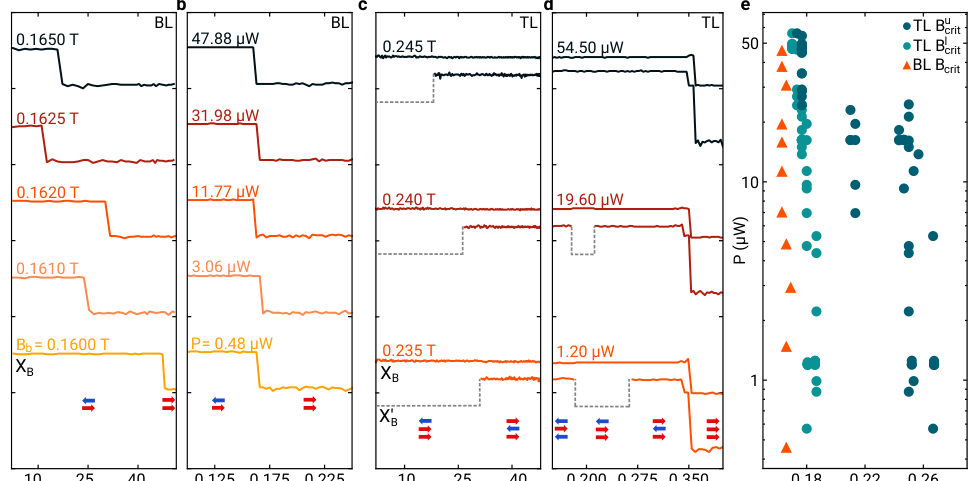
<figcaption class="paper-figure-caption"><b>Fig 3.</b> FIG. 3. Interplay of optical and magnetic fields determines the switching behavior. a, PL energy of the XB exciton in the bilayer, measured for upward sweeps of the laser power at different magnetic fields Bb. The arrows depict the magnetic configuration. b, Bilayer PL energy of XB for upward sweeps of Bb, measured at different laser powers. c and d, Same as a and b, but for the trilayer. In the MS magnetic configuration, the X′ B exciton PL was quenched (the dashed lines indicate its energy in DR). e, Critical spin-flip fields as a function of the laser power. For the bilayer, Bcrit for the AFM–FM transition is shown by orange triangles; for the trilayer, the critical fields for the...</figcaption>
</figure>
<figure class="paper-figure-card">
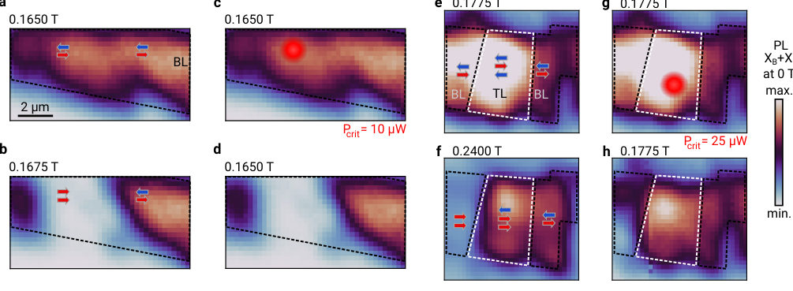
<figcaption class="paper-figure-caption"><b>Fig 4.</b> FIG. 4. Local and remote switching of magnetic domains. a and b, Raster-scan maps of bilayer PL intensity for magnetic fields of 0.1650 and 0.1675 T, respectively, acquired for a laser power below the critical value Pcrit. The increase in magnetic field switches the magnetic configuration within a subdomain, as indicated by the arrows. c and d, PL map of the same area as in a and b at a constant magnetic field of 0.1650 T, acquired before and after illuminating the spot indicated by the red dot with a laser power above Pcrit. Local laser illumination has the same effect as an increase of the magnetic field. e and f, PL map of the trilayer and the neighboring bilayers for magnetic fields of...</figcaption>
</figure>
<figure class="paper-figure-card">
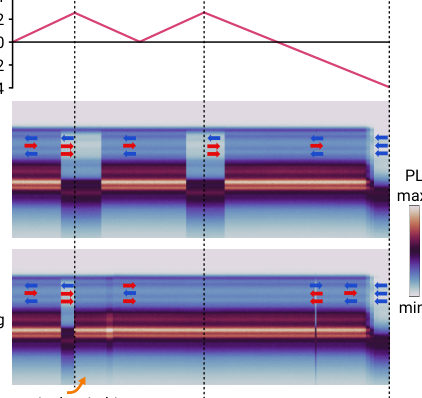
<figcaption class="paper-figure-caption"><b>Fig 5.</b> FIG. 5. Magneto-optical preparation and detection of the zero-field magnetic configuration. a, Sequence of magnetic fields Bb applied in the experiment. b, PL spectra obtained for the magnetic field sequence in a with a laser power below Pcrit, corresponding to a control measurement loop. The magnetic configurations occurring during the sweep are indicated by the arrows. c, Same as b, but with the sequence modified by targeted optical switching as indicated by the arrow.</figcaption>
</figure>
</div>

<p><strong>Summary.</strong> The authors demonstrate that the magnetic order in few-layer CrSBr can be switched using low-power optical excitation. By monitoring exciton energies and photoluminescence, they show that light can induce spin-flip transitions across extended areas, enabling deterministic control over the material's magnetic ground state. This establishes a promising platform for next-generation magneto-optoelectronic devices.</p>
<p><strong>Why it may be interesting.</strong> This work provides a direct experimental demonstration of optically controlling magnetic states in a solid-state material using light-matter coupling via excitons, which is highly relevant for developing quantum or magneto-optoelectronic devices.</p>
<details>
<summary>Detailed structure</summary>
<p><strong>Main problem.</strong> The study aims to demonstrate and utilize optical switching of magnetic order in few-layer CrSBr, a 2D van der Waals magnet.</p>
<p><strong>Main result.</strong> Low-power continuous-wave laser excitation can induce spin-flip transitions ($ ext{AFM}    o   ext{FM}$) in the bilayer, and remote switching was observed across extended domains. The critical field for certain transitions decreases significantly with increasing laser power.</p>
<p><strong>Method.</strong> The researchers used exciton absorption and photoluminescence spectroscopy with a continuous-wave laser to probe magnetic state changes as a function of applied magnetic field and laser power.</p>
<p><strong>Model / system.</strong> The physical system is few-layer CrSBr, an antiferromagnetic 2D van der Waals magnet encapsulated by hBN. The magnetism can be controlled via magneto-excitons, which provide both optical readout and strong absorption channels for energy transfer.</p>
<p><strong>Key observables.</strong> Exciton energies ($    ext{XA}$, $ ext{XB}$), magnetic configuration (AFM, FM, MS, AFMB), critical switching power ($P_{  ext{crit}}$), and critical magnetic fields ($B_{   ext{crit}}$).</p>
<p><strong>Important parameters / regimes.</strong> Laser power as low as a few microwatts ($\mu	ext{W}$); near-critical external magnetic fields; temperature (cryogenic conditions).</p>
<p><strong>Assumptions / limitations.</strong> The switching mechanism is attributed to energy transfer via exciton absorption coupling to the spin lattice, excluding substrate heating or photo-doping effects.</p>
<p><strong>Figures summary.</strong> Figures illustrate exciton signatures confirming magnetic transitions under varying B fields; PL evolution maps demonstrate $  ext{AFM}    o   ext{FM}$ switching upon increasing laser power and observing local/remote switching patterns.</p>
<p><strong>Paper structure.</strong> The paper systematically presents measurements using DR and PL spectroscopy, first establishing the dependence of exciton energies on magnetic order (Fig. 1), then demonstrating optical control by varying laser power (Fig. 2), and finally mapping out the complex interplay between applied fields and optical power to deterministically set the zero-field state (Fig. 3, Fig. 5).</p>
</details>
<details>
<summary>Abstract</summary>
<p>Manipulating magnetism with light is crucial for both fundamental understanding and technological advancements of information storage devices. The layered antiferromagnet CrSBr, part of the recently emerging class of two-dimensional van der Waals magnets, offers a unique path towards optical control of magnetism via magneto-excitons, which allow optical readout of the spin alignment and also provide a strong absorption channel. Here, we use exciton absorption and photoluminescence to demonstrate optical switching of the magnetic order in bi- and trilayer CrSBr. Using a continuous-wave laser with a power as low as a few microwatts at near-critical external magnetic fields, we demonstrate both local and remote switching of the magnetic configuration in extended lateral domains and further employ this mechanism to deterministically prepare the zero-field magnetic configuration. Our results establish optical switching as a useful means of controlling magnetism in CrSBr, with potential applications in magneto-optoelectronic devices.</p>
</details>
<p><sub><a href="#top">↑ back to top</a></sub></p>

<p><a id="paper-2608.02552"></a></p>
<h3 id="magnetic-skyrmion-interacting-with-optical-skyrmion"><a href="http://arxiv.org/abs/2608.02552v1">Magnetic Skyrmion Interacting with Optical Skyrmion</a></h3>
<p><strong>Authors:</strong> Lan Bo, Jian Chen, Xichao Zhang, Yan Zhou, Chengwei Qiu, Masahito Mochizuki<br>
<strong>Type:</strong> theory · <strong>Category:</strong> other · <strong>PDF:</strong> <a href="https://arxiv.org/pdf/2608.02552v1">https://arxiv.org/pdf/2608.02552v1</a><br>
<strong>Analysis basis:</strong> full PDF text, analyzed in chunks
<strong>Topic relevance:</strong> 🔥 <code>spintronics-quantum-optics interface</code> <strong>4/5</strong> · <code>exotic spin models in light-matter</code> <strong>3/5</strong> · <code>interference shaping light</code> <strong>3/5</strong> · <code>analog quantum simulation</code> <strong>2/5</strong> · <code>driven-dissipative phase transition</code> <strong>2/5</strong> · <code>methods for driven-dissipative</code> <strong>2/5</strong> · <code>non-equilibrium dynamics</code> <strong>2/5</strong> · <code>Keldysh / 2PI / non-Gaussian methods</code> <strong>1/5</strong> · <code>correlated / nonlocal dissipation</code> <strong>1/5</strong> · <code>non-equilibrium universality</code> <strong>1/5</strong></p>
<div class="figure-strip-hint">↔ Scroll figures horizontally</div>
<div class="paper-figures-scroll">
<figure class="paper-figure-card">
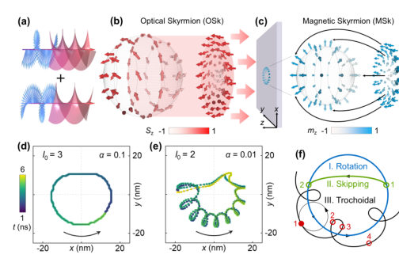
<figcaption class="paper-figure-caption"><b>Fig 1.</b> FIG. 1. (a) Two orthogonally polarized LG modes with l0 = 2 and l1 = 3. Red helical surfaces and blue arrows represent the OAM and SAM. (b),(c) Bloch-type OSk and Néel-type MSk shown through their stereographic projections. (d),(e) Representative MSk trajectories under different α and l0. (f) Schematic summary of the three dynamical modes.</figcaption>
</figure>
<figure class="paper-figure-card">
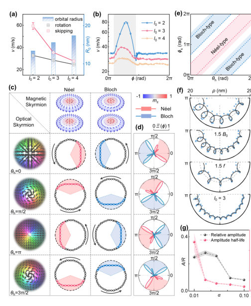
<figcaption class="paper-figure-caption"><b>Fig 2.</b> FIG. 2. (a) Rotation/skipping velocities and the orbital ra- dius R0 versus l0. (b) Azimuthal dependence of the instanta- neous velocity v(ϕ) for different l0. The shaded bands mark the skipping window. (c) Trajectories for different types of OSks and MSks. (d) Polar plots of the skipping index Ξ(ϕ) for Néel/Bloch MSks, with predicted skipping sectors shaded. (e) Skipping azimuth ϕs from simulations (shaded bands) com- pared with analytical predictions (dashed lines). (f) Simu- lated trochoidal trajectories (symbols) and corresponding fits (curves) for varying B0, f, and l0. The top panel reproduces the reference case in Fig. 1 (e). (g) Relative amplitude A/R and amplitude half-life ln 2/Γ...</figcaption>
</figure>
<figure class="paper-figure-card">
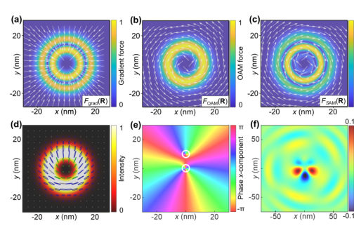
<figcaption class="paper-figure-caption"><b>Fig 3.</b> FIG. 3. (a)–(c) Optical-force distributions showing the gra- dient, OAM, and SAM components. (d) Polarization distri- bution of the OSk beam. (e) Phase distribution of the Bx field. (f) Spin-wave radiation excited by the OSk beam in a uniformly magnetized film.</figcaption>
</figure>
<figure class="paper-figure-card">
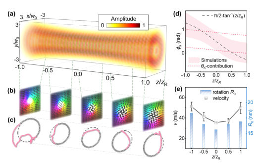
<figcaption class="paper-figure-caption"><b>Fig 4.</b> FIG. 4. (a) 3D amplitude distribution of the OSk beam. (b), (c) Stokes-vector textures and simulated MSk trajectories at the corresponding cross sections. (d) Skipping azimuth ϕs(z) from simulations compared with the analytical prediction. (e) Rotation velocity v and orbital radius R0 versus z/zR.</figcaption>
</figure>
</div>

<p><strong>Summary.</strong> This paper investigates the complex interaction between magnetic skyrmions and structured optical beams carrying orbital and spin angular momentum. By decomposing the driving force into distinct components, the authors identify three unique dynamical modes—rotation, skipping, and trochoidal motion. The results demonstrate that this coupling enables precise, phase-programmable control over magnetic topological matter using light.</p>
<p><strong>Why it may be interesting.</strong> This work bridges topological concepts from condensed matter magnetism (skyrmions) with quantum optics (structured light), providing a framework for controlling magnetic states using tailored optical fields, which is highly relevant to open quantum systems and light-matter interaction studies.</p>
<details>
<summary>Detailed structure</summary>
<p><strong>Main problem.</strong> The study investigates how a single Magnetic Skyrmion (MSk) interacts with an Optical Skyrmion (OSk) beam to achieve topology-enabled control over the MSk's dynamics.</p>
<p><strong>Main result.</strong> Three distinct nonlinear dynamical modes—rotation, skipping, and trochoidal motion—are identified. The coupling allows for helicity-selective and phase-programmable optomagnonic control.</p>
<p><strong>Method.</strong> The analysis uses an optomagnetic effective-field picture, decomposing the optical driving force into gradient, OAM, and SAM contributions to model the MSk's response via modified LLG or Thiele equations.</p>
<p><strong>Model / system.</strong> The system involves magnetic skyrmions (topological particle) driven by structured light beams carrying orbital and spin angular momentum (OSk). The dynamics are governed by coupling terms derived from the optical drive field acting on the MSk magnetization.</p>
<p><strong>Key observables.</strong> MSk core trajectories, skipping index $\Xi(\phi)$, rotational/skipping velocities $v(\phi)$, and the dependence of skipping azimuth ($\phi_s$) on OSk helicity ($  heta_h$).</p>
<p><strong>Important parameters / regimes.</strong> Damping constant ($\alpha$), Laguerre-Gaussian mode indices ($l_0$), and the Gouy phase $\zeta(z)$ in 3D propagation.</p>
<p><strong>Assumptions / limitations.</strong> The model assumes an externally prescribed optical drive, neglecting magnetization-to-optical feedback. The rigid-particle approximation is used for MSk center dynamics.</p>
<p><strong>Figures summary.</strong> Figures illustrate LG modes and Poincaré sphere mappings; Fig. 2 shows velocity dependence and trajectories for the three dynamical modes; Fig. 3 details the components of the optical force ($\mathbf{F}_{	ext{grad}}$, $\mathbf{F}_{	ext{OAM}}$, $\mathbf{F}_{	ext{SAM}}$); Fig. 4 visualizes 3D beam structure and $z$-dependent skipping.</p>
<p><strong>Paper structure.</strong> The paper establishes the physical context (MSk/OSk interaction), models the dynamics using force decomposition, identifies three distinct nonlinear modes (rotation, skipping, trochoidal motion) through analytical and numerical simulation, and extends the analysis to 3D propagation effects.</p>
</details>
<details>
<summary>Abstract</summary>
<p>Magnetic skyrmions (MSks) and optical skyrmions (OSks) embody topology in matter and in light, respectively. Here we investigate the interaction between a single MSk and an OSk beam. Three distinct nonlinear dynamical modes are identified: rotation, skipping, and trochoidal motion. By decomposing the optical driving force into gradient, orbital-angular-momentum, and spin-angular-momentum contributions, we clarify their respective roles of radial confinement, azimuthal drift, and precessional modulation. The skipping motion arises from the azimuthal asymmetry of the OSk beam and exhibits spatial selectivity originating from the magnetization-polarization coupling between the MSk and OSk. In three dimensions, the coupling acquires a propagation-dependent phase dominated by the differential Gouy phase, which yields $z$-asymmetric skipping trajectories. These results bridge topological particles and topological fields within a unified framework, offering helicity-selective and phase-programmable routes to optomagnonic control.</p>
</details>
<p><sub><a href="#top">↑ back to top</a></sub></p>

<p><a id="paper-2608.00777"></a></p>
<h3 id="magnetoelastic-control-of-quantum-correlations-and-field-sensitivity-in-a-spin-12-heisenberg-dimer"><a href="http://arxiv.org/abs/2608.00777v1">Magnetoelastic control of quantum correlations and field sensitivity in a spin-1/2 Heisenberg dimer</a></h3>
<p><strong>Authors:</strong> E. W. B. de Souza, Moises Rojas, Onofre Rojas<br>
<strong>Type:</strong> theory · <strong>Category:</strong> statistical mechanics · <strong>PDF:</strong> <a href="https://arxiv.org/pdf/2608.00777v1">https://arxiv.org/pdf/2608.00777v1</a><br>
<strong>Analysis basis:</strong> full PDF text, analyzed in chunks
<strong>Topic relevance:</strong> 🔥 <code>analog quantum simulation</code> <strong>4/5</strong> · 🔥 <code>entanglement &amp; information structure</code> <strong>4/5</strong> · <code>exotic spin models in light-matter</code> <strong>3/5</strong> · <code>spintronics-quantum-optics interface</code> <strong>2/5</strong> · <code>Keldysh / 2PI / non-Gaussian methods</code> <strong>1/5</strong> · <code>correlated / nonlocal dissipation</code> <strong>1/5</strong> · <code>driven-dissipative phase transition</code> <strong>1/5</strong> · <code>methods for driven-dissipative</code> <strong>1/5</strong></p>
<div class="figure-strip-hint">↔ Scroll figures horizontally</div>
<div class="paper-figures-scroll">
<figure class="paper-figure-card">
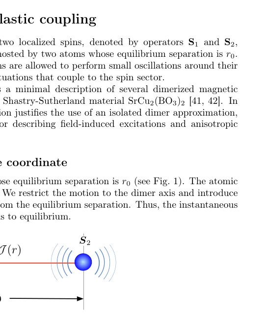
<figcaption class="paper-figure-caption"><b>Fig 1.</b> Figure 1: Schematic representation of a dimer spin oscillating around its equilibrium position r0.</figcaption>
</figure>
<figure class="paper-figure-card">
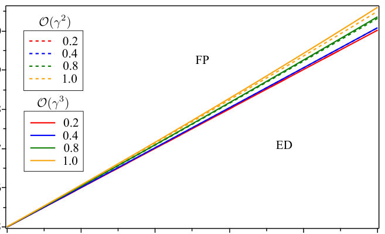
<figcaption class="paper-figure-caption"><b>Fig 2.</b> Figure 2: Zero-temperature phase diagram in the plane B/µBg versus Jx, for Jz = −1, κ = 5, at different values of γ. The dashed line includes only the linear magnetoelastic correction, while the solid line incorporates both linear and quadratic contributions.</figcaption>
</figure>
<figure class="paper-figure-card">
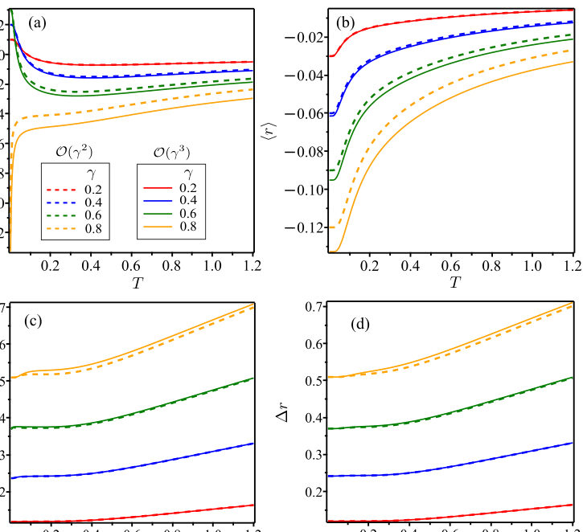
<figcaption class="paper-figure-caption"><b>Fig 3.</b> Figure 3: Thermal average displacement ⟨r⟩(a,b) and standard deviation ∆r (c,d) as functions of temperature T, for Jx = 1, Jz = −1 and κ = 5, at different values of γ. Dashed curves include only the linear magnetoelastic contribution, while solid curves include both linear and quadratic corrections. Panels (a,c) correspond to B/µBg = 1.1, and (b,d) to B/µBg = 0.9.</figcaption>
</figure>
<figure class="paper-figure-card">
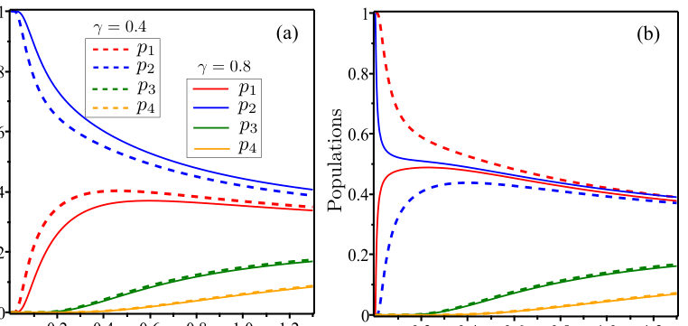
<figcaption class="paper-figure-caption"><b>Fig 4.</b> Figure 4: Level populations pj as functions of temperature T, for Jx = 1, Jz = −1 and κ = 5. Dashed curves correspond to γ = 0.4, and solid curves to γ = 0.8. Panels (a) and (b) show B/µBg = 1.1 and B/µBg = 0.9, respectively.</figcaption>
</figure>
<figure class="paper-figure-card">
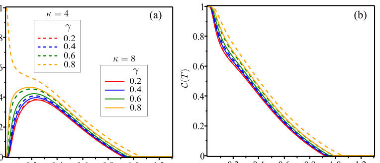
<figcaption class="paper-figure-caption"><b>Fig 5.</b> Figure 5: Concurrence C(T) as a function of temperature T, for Jx = 1, Jz = −1 and different values of γ. Dashed curves correspond to κ = 4, and solid curves to κ = 8. Panels (a) and (b) show B/µBg = 1.1 and B/µBg = 0.9, respectively.</figcaption>
</figure>
</div>

<p><strong>Summary.</strong> The paper theoretically analyzes a spin-1/2 Heisenberg dimer where the magnetic interactions are modulated by atomic vibrations. By treating this magnetoelastic coupling, the authors demonstrate that the system's ability to maintain nonclassical correlations (measured by LQU) and its sensitivity to external fields ($F_B$) are both controlled by the vibrational state. This establishes a unified picture linking quantum information measures to measurable thermodynamic responses.</p>
<p><strong>Why it may be interesting.</strong> This work provides a concrete, tunable mechanism (magnetoelastic coupling) within a simple dimer model to control multiple facets of quantum behavior simultaneously, which is highly relevant for designing quantum sensors or qubits based on solid-state systems.</p>
<details>
<summary>Detailed structure</summary>
<p><strong>Main problem.</strong> The study investigates how magnetoelastic coupling controls quantum correlations (entanglement, nonclassical uncertainty) and magnetic field sensitivity in a spin-1/2 Heisenberg dimer.</p>
<p><strong>Main result.</strong> Magnetoelastic coupling plays a central role by linking the system's thermodynamic response to its underlying quantum correlation structure. Local Quantum Uncertainty persists even when entanglement vanishes at finite temperatures.</p>
<p><strong>Method.</strong> The authors combine an exact treatment of the spin sector with a harmonic approximation for vibrational degrees of freedom, analyzing observables like Concurrence and Magnetic Fisher Information.</p>
<p><strong>Model / system.</strong> The system is a spin-1/2 Heisenberg dimer whose exchange interaction depends on its relative displacement ($r$) due to magnetoelastic coupling. The Hamiltonian includes both magnetic (spin) and harmonic (vibrational) parts.</p>
<p><strong>Key observables.</strong> Concurrence, Local Quantum Uncertainty (LQU), Magnetic Fisher Information ($F_B$), and thermal averages of spin/displacement ($\langle r^2 
angle$).</p>
<p><strong>Important parameters / regimes.</strong> Temperature ($T$), external magnetic field ($B$), and the magnetoelastic coupling strength ($\gamma_\alpha$). The analysis is restricted by $\eta(T) \ll 1$.</p>
<p><strong>Assumptions / limitations.</strong> The primary approximations involve restricting the vibrational motion to small displacements (harmonic approximation) and using Taylor expansions for the exchange couplings.</p>
<p><strong>Figures summary.</strong> Figures illustrate the temperature dependence of Concurrence, LQU, and Fisher Information, showing how these quantities behave in different magnetic field regimes (ED vs. FP).</p>
<p><strong>Paper structure.</strong> The paper builds from defining the coupled Hamiltonian to deriving an effective model using harmonic approximations for each spin sector. It then analyzes specific observables—LQU and $F_B$—to establish a direct link between quantum correlations and thermodynamic sensitivity.</p>
</details>
<details>
<summary>Abstract</summary>
<p>We investigate the thermodynamic and quantum properties of a magnetoelastic spin-1/2 Heisenberg dimer, where the exchange interaction depends on the dimer displacement. By combining an exact treatment of the spin sector with a harmonic description of the vibrational degree of freedom, we obtain an effective model in which each spin configuration is associated with a distinct vibrational mode, leading to a non-factorizable partition function. We analyze the thermal behavior and identify regimes corresponding to entangled and fully polarized states. Quantum correlations are analyzed through concurrence and local quantum uncertainty, showing that while entanglement is rapidly suppressed by temperature, nonclassical correlations persist over a broader range due to the competition between spin sectors. We further examine the magnetic Fisher information, which provides a measure of the sensitivity of the system to the external magnetic field. Its behavior reveals enhanced response in crossover regions where magnetoelastic effects induce strong redistribution of the level populations. Our results demonstrate that magnetoelastic coupling plays a central role in controlling both quantum correlations and magnetic response, establishing a direct link between entanglement, nonclassical correlations, and thermodynamic sensitivity in coupled spin-dimer systems.</p>
</details>
<p><sub><a href="#top">↑ back to top</a></sub></p>

<p><a id="paper-2608.02260"></a></p>
<h3 id="valley-controlled-chiral-magnetism-in-transition-metal-dichalcogenide-monolayers"><a href="http://arxiv.org/abs/2608.02260v1">Valley-controlled chiral magnetism in transition metal dichalcogenide monolayers</a></h3>
<p><strong>Authors:</strong> Igor S. Krivenko, Vladimir N. Mantsevich, Dmitry S. Smirnov<br>
<strong>Type:</strong> theory · <strong>Category:</strong> statistical mechanics · <strong>PDF:</strong> <a href="https://arxiv.org/pdf/2608.02260v1">https://arxiv.org/pdf/2608.02260v1</a><br>
<strong>Analysis basis:</strong> full PDF text, analyzed in chunks
<strong>Topic relevance:</strong> 🔥 <code>analog quantum simulation</code> <strong>4/5</strong> · <code>exotic spin models in light-matter</code> <strong>3/5</strong> · <code>Keldysh / 2PI / non-Gaussian methods</code> <strong>1/5</strong> · <code>methods for driven-dissipative</code> <strong>1/5</strong> · <code>spintronics-quantum-optics interface</code> <strong>1/5</strong></p>
<div class="figure-strip-hint">↔ Scroll figures horizontally</div>
<div class="paper-figures-scroll">
<figure class="paper-figure-card">
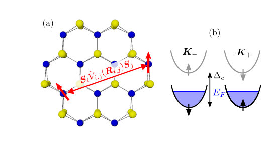
<figcaption class="paper-figure-caption"><b>Fig 1.</b> FIG. 1. (a) RKKY exchange interaction between two mag- netic impurities (red arrows) on top of a TMD ML (yellow and blue spheres). (b) Spin-valley locking regime for the con- duction electrons in the TMD ML: the electrons occupy the two lower spin subbands in the K+ and K−valleys of the conduction band.</figcaption>
</figure>
<figure class="paper-figure-card">
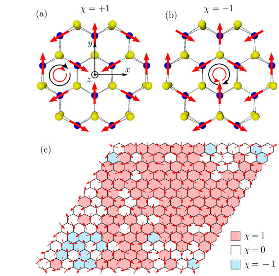
<figcaption class="paper-figure-caption"><b>Fig 2.</b> FIG. 2. (a) Chiral 120◦antiferromagnetic N´eel state with positive chirality χ = +1. (b) The same state with negative chirality χ = −1. (c) A snapshot taken from a Monte Carlo simulation of magnetic thermodynamics: the red, white and blue hexagons have chiralities χn = +1, 0, and −1, respec- tively.</figcaption>
</figure>
<figure class="paper-figure-card">
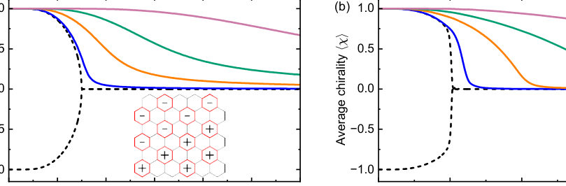
<figcaption class="paper-figure-caption"><b>Fig 3.</b> FIG. 3. Temperature dependence of the average chirality for the different strengths of the RKKY interaction specified in the legend in (b). The black dashed lines show the two equivalent chiral phases in the absence of the RKKY interaction, ˜V = 0. (a) Mean field approach of Eqs. (9) and (10). The inset shows a domain wall between different chiralities used for the derivation of the mean field theory. (b) Monte Carlo simulations for kF a0 = 0.1 (and L2 = 272 atoms).</figcaption>
</figure>
<figure class="paper-figure-card">
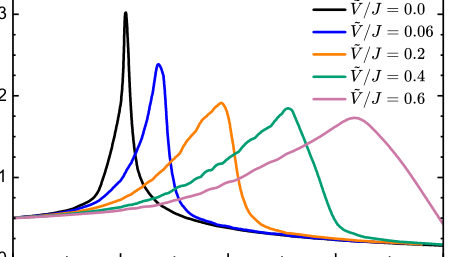
<figcaption class="paper-figure-caption"><b>Fig 4.</b> FIG. 4. Heat capacity per atom calculated within the Monte Carlo simulations for different values of the RKKY interaction for the same parameters as in Fig. 3(b).</figcaption>
</figure>
<figure class="paper-figure-card">
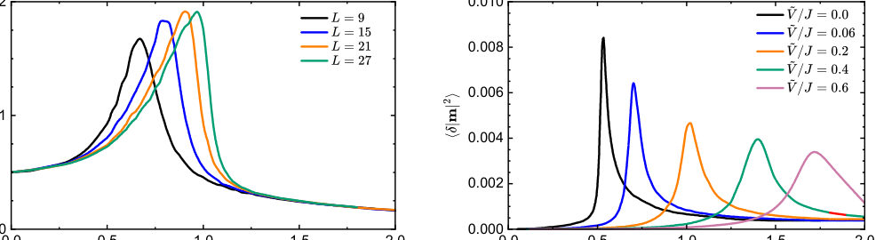
<figcaption class="paper-figure-caption"><b>Fig 5.</b> FIG. 5. (a) Heat capacity per atom calculated within the Monte Carlo simulations for different cluster sizes specified in the legend for ˜V /J = 0.1 and kF a0 = 0.1. (b) Variance of the magnetization magnitude ⟨δ|m|2⟩calculated for the same parameters as in Fig. 4.</figcaption>
</figure>
</div>

<p><strong>Summary.</strong> This work investigates how the Ruderman-Kittel-Kasuya-Yosida (RKKY) interaction, mediated by valley degrees of freedom in TMD monolayers, controls chiral magnetism. Using theoretical modeling and simulations, the authors show that this interaction fundamentally alters the magnetic phase diagram, stabilizing a unique chirality state while shifting the characteristic spin transition temperature.</p>
<p><strong>Why it may be interesting.</strong> The coupling between valley physics, long-range interactions (RKKY), and magnetic ordering provides a rich platform for studying emergent quantum phases beyond simple Heisenberg models, relevant to correlated electron systems.</p>
<details>
<summary>Detailed structure</summary>
<p><strong>Main problem.</strong> To use the RKKY interaction mediated by valley degree of freedom in TMD monolayers to create and control chiral magnetic textures, exploring non-universal phase transitions.</p>
<p><strong>Main result.</strong> The chiral RKKY interaction reshapes the phase diagram by suppressing the chirality-related second-order transition while shifting the Berezinskii–Kosterlitz–Thouless (BKT) spin orientation transition to higher temperatures.</p>
<p><strong>Method.</strong> Mean field theory and classical Monte Carlo simulations are employed to analyze the system's phase diagram and critical behavior.</p>
<p><strong>Model / system.</strong> The study focuses on atomically thin TMD monolayers with localized magnetic moments, modeled by a Hamiltonian incorporating RKKY exchange ($H_{	ext{RKKY}}$) and direct exchange ($H_{	ext{dir}}$). The physics is governed by spin-valley locking in the low-energy electronic structure.</p>
<p><strong>Key observables.</strong> Average chirality ($\langle\chi
angle$), Berezinskii–Kosterlitz–Thouless (BKT) transition temperature, and specific heat capacity ($c_V(T)$).</p>
<p><strong>Important parameters / regimes.</strong> RKKY interaction strength ($    ilde{V}$), direct exchange coupling ($J$), and the lattice structure parameters.</p>
<p><strong>Assumptions / limitations.</strong> The analysis relies on mean-field theory for initial transition estimates, and Monte Carlo simulations are used to refine results, though approximations regarding the RKKY range are noted.</p>
<p><strong>Figures summary.</strong> Figures illustrate the chiral magnetic state (e.g., $120^\circ$ Néel state), temperature dependence of average chirality showing suppression by RKKY, and heat capacity peaks demonstrating BKT transition shifts.</p>
<p><strong>Paper structure.</strong> The paper develops the Hamiltonian using second-order perturbation theory for the RKKY interaction in TMDs. It then applies mean field theory to analyze the chiral phase transition ($T_c$) and uses Monte Carlo simulations to study the spin orientation transition (BKT) as a function of RKKY strength.</p>
</details>
<details>
<summary>Abstract</summary>
<p>We put forward the Ruderman-Kittel-Kasuya-Yosida (RKKY) interaction in transition metal dichalcogenide monolayers as a tool to create and control a chiral magnetic texture. We show that in the spin-valley locking regime, the RKKY interaction acts as a Dzyaloshinskii-Moriya coupling with an effective spin rotation period exactly equal to the tripled lattice constant. Using mean field theory and classical Monte Carlo simulations, we demonstrate that this interaction qualitatively reshapes the phase diagram of atomically thin antiferromagnets. It destroys the chirality-related phase transition by selecting a single chirality value even when the RKKY interaction is small. At the same time, it shifts the Berezinskii-Kosterlitz-Thouless transition associated with spins orientation to higher temperatures. We argue that the valley degree of freedom of electrons mediating the RKKY interaction provides a powerful control knob for exploring non-universal phase transitions and quantum spin liquid states in two-dimensional van der Waals heterostructures.</p>
</details>
<p><sub><a href="#top">↑ back to top</a></sub></p>

<p><a id="paper-2608.01553"></a></p>
<h3 id="layer-hybridized-wigner-crystals-in-mose2ws2-moire-superlattice"><a href="http://arxiv.org/abs/2608.01553v1">Layer-Hybridized Wigner Crystals in MoSe2/WS2 Moiré Superlattice</a></h3>
<p><strong>Authors:</strong> Tianyi Ouyang, Yuze Meng, Li Yan, Yuxuan Chen, Shuai Zhang, Xinyue Chen, Melike Erdi, Takashi Taniguchi, Kenji Watanabe, Seth Ariel Tongay, Benjamin Hunt, Ming Xie, Yong-Tao Cui, Su-Fei Shi<br>
<strong>Type:</strong> experiment · <strong>Category:</strong> strongly correlated electrons · <strong>PDF:</strong> <a href="https://arxiv.org/pdf/2608.01553v1">https://arxiv.org/pdf/2608.01553v1</a><br>
<strong>Analysis basis:</strong> full PDF text, analyzed in chunks
<strong>Topic relevance:</strong> 🔥 <code>analog quantum simulation</code> <strong>4/5</strong> · <code>driven-dissipative phase transition</code> <strong>2/5</strong> · <code>correlated cavity matter</code> <strong>1/5</strong> · <code>spintronics-quantum-optics interface</code> <strong>1/5</strong></p>
<div class="figure-strip-hint">↔ Scroll figures horizontally</div>
<div class="paper-figures-scroll">
<figure class="paper-figure-card">
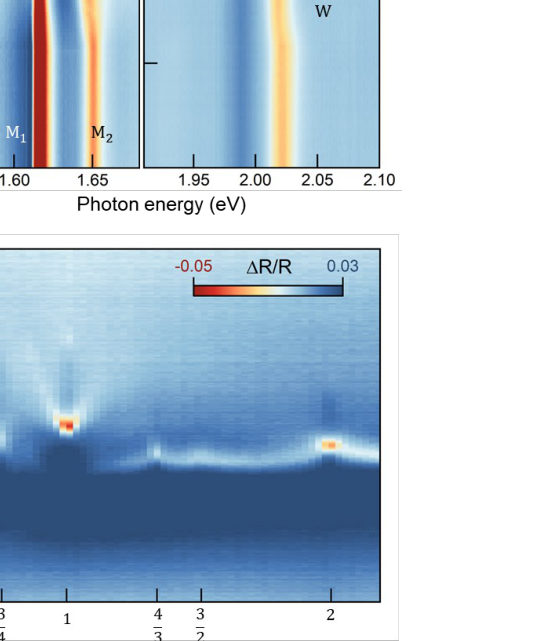
<figcaption class="paper-figure-caption"><b>Fig 1.</b> Fig.1. Doping-dependent reflectance contrast spectra of the MoSe2/WS2 moiré heterobilayer at zero electric field. (a) Schematic of the MoSe2/WS2 heterobilayer device incorporating a WSe2 2s exciton sensing layer. (b) Schematic of the Hubbard-band splitting of the conduction-band minima (CBMs) in MoSe2 and WS2. (c)–(e) Doping-dependent reflectance contrast spectra of MoSe2, WS2 and WSe2 2s sensing in the heterojunction region, respectively. M and W represent intralayer moiré excitons in MoSe2 and WS2, respectively. The sample temperature is maintained at 1.67 K for all measurements shown in this work.</figcaption>
</figure>
<figure class="paper-figure-card">
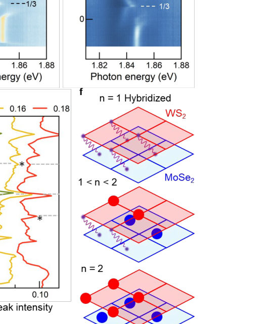
<figcaption class="paper-figure-caption"><b>Fig 2.</b> Fig.3. WSe2 2s sensing of flat-band hybridization in the band-alignment transition regime. (a)–(c) Doping-dependent reflectance contrast spectra of the WSe2 2s sensing exciton measured at electric fields of 0.14, 0.16, and 0.18 V/nm, respectively. (d) Large-range map of the WSe2 2s peak intensity across the band-alignment transition regime. White dashed box denotes the transition regime. (e) Doping-dependent WSe2 2s sensing exciton peak intensity at electric fields of 0.14, 0.16, and 0.18 V/nm. Stars denote the correlated insulating states at n = 2/3 and 3/2. (f) Schematic illustrations of hybridized Mott insulator n = 1 (upper panel), nonhybridized charge-transfer insulator n = 2 (lower...</figcaption>
</figure>
<figure class="paper-figure-card">
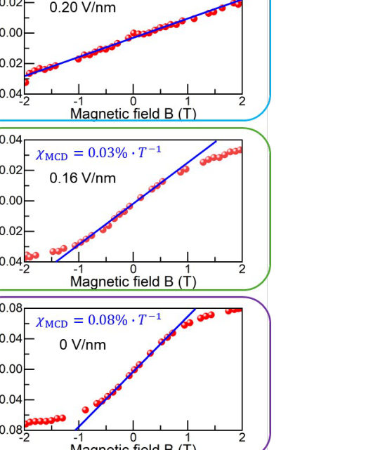
<figcaption class="paper-figure-caption"><b>Fig 3.</b> Fig.4. Magnetic circular dichroism across the band-alignment transition. (a) Electric-field-dependent reflectance contrast spectra of MoSe2 in the junction region at n = 1. The blue, green, and purple solid lines mark representative electric fields in the type-II band-alignment regime, the transition regime, and the type-I band-alignment regime, respectively. (b)-(d) Magnetic- field-dependent MCD measurements at resonant energy of 1.63 eV, corresponding to the blue, green, and purple solid lines in (a), respectively. All blue lines in (b)-(d) are fitted near zero magnetic field.</figcaption>
</figure>
</div>

<p><strong>Summary.</strong> This work demonstrates that MoSe2/WS2 moiré heterobilayers can act as tunable platforms for engineering correlated electronic states like Mott insulators and Wigner crystals. By applying an out-of-plane electric field, researchers control the interlayer hybridization, showing that charge ordering is stabilized differently depending on whether the electron density is below or above one per moiré cell.</p>
<p><strong>Why it may be interesting.</strong> The ability to electrically tune correlation strength and charge ordering in a solid-state moiré system provides an accessible platform for studying fundamental many-body physics, analogous to tuning parameters in quantum simulation models.</p>
<details>
<summary>Detailed structure</summary>
<p><strong>Main problem.</strong> The study investigates whether fractional charge-ordered states, such as Generalized Wigner Crystals (GWC), can survive when interlayer hybridization is induced in moiré heterobilayers.</p>
<p><strong>Main result.</strong> The system exhibits layer-hybridized Mott insulators and GWCs whose stability depends strongly on the electron filling factor ($n$); specifically, strong correlation is favored at fillings above one electron per moiré cell due to Coulomb repulsion overcoming tunneling.</p>
<p><strong>Method.</strong> The research combines optical characterization (reflectance contrast spectroscopy using Rydberg excitons) with magneto-optical measurements (Magnetic Circular Dichroism, MCD) across varying out-of-plane electric fields.</p>
<p><strong>Model / system.</strong> The physical system is an H-stacked MoSe2/WS2 moiré heterobilayer. The analysis uses concepts of layer-polarized generalized Wigner crystals and Mott insulators, tunable via an external electric field that controls the band alignment between the two semiconducting layers.</p>
<p><strong>Key observables.</strong> MCD spectra (sensitive to magnetism), doping-dependent reflectance contrast spectroscopy, hybridization energy ($t$), and charge ordering signatures at fractional fillings.</p>
<p><strong>Important parameters / regimes.</strong> Filling factor ($n$) relative to unity, out-of-plane electric field strength ($    ext{V/nm}$), and the resulting band alignment regime (Type-I vs. Type-II).</p>
<p><strong>Assumptions / limitations.</strong> The system can be modeled by considering the competition between interlayer tunneling (kinetic energy) and on-site Coulomb repulsion, which dictates charge localization.</p>
<p><strong>Figures summary.</strong> Figures detail doping-dependent reflectance contrast spectra showing Hubbard band splitting under varying electric fields, alongside MCD measurements confirming magnetic signatures across different hybridization regimes.</p>
<p><strong>Paper structure.</strong> The paper systematically maps the electronic state evolution by first characterizing the moiré superlattice structure and then using electric field tuning to transition between different band alignments (Type-I $   o$ Type-II), observing changes in correlated insulating states (Mott/GWC) at varying electron fillings.</p>
</details>
<details>
<summary>Abstract</summary>
<p>Transition metal dichalcogenide moiré heterobilayers with type-II band alignment provide a versatile platform for layer-polarized generalized Wigner crystals, in which strong Coulomb interactions drive charge ordering at fractional lattice fillings. With a finite interlayer band offset, an out-of-plane electric field can tune layer-resolved moiré bands through resonance and enable controllable interlayer hybridization. Although hybridized Mott insulators have been previously demonstrated, whether fractional charge-ordered states can survive such hybridization remains elusive. Here we drive an H-stacked MoSe2/WS2 moiré heterobilayer through a type-I-to-type-II band-alignment transition and realize layer-hybridized Mott insulator and generalized Wigner crystals. For fillings below one electron per moiré cell, tunneling delocalizes electrons and modifies Wigner crystallization. However, above one electron per cell, Coulomb repulsion overcomes tunneling and favors layer-separated occupation, stabilizing stronger charge-ordered states. These results establish electrically tunable hybridized moiré heterobilayers as a powerful platform for engineering correlated charge order and exploring fractional Chern phases and emergent magnetism.</p>
</details>
<p><sub><a href="#top">↑ back to top</a></sub></p>

<p><a id="paper-2608.01096"></a></p>
<h3 id="time-dependent-berry-curvature-and-quantum-metric-of-floquet-bloch-states"><a href="http://arxiv.org/abs/2608.01096v1">Time-dependent Berry curvature and quantum metric of Floquet-Bloch states</a></h3>
<p><strong>Authors:</strong> S. Sajad Dabiri, Reza Asgari<br>
<strong>Type:</strong> theory · <strong>Category:</strong> other · <strong>PDF:</strong> <a href="https://arxiv.org/pdf/2608.01096v1">https://arxiv.org/pdf/2608.01096v1</a><br>
<strong>Analysis basis:</strong> full PDF text, analyzed in chunks
<strong>Topic relevance:</strong> 🔥 <code>non-equilibrium dynamics</code> <strong>4/5</strong> · <code>analog quantum simulation</code> <strong>1/5</strong> · <code>driven-dissipative phase transition</code> <strong>1/5</strong> · <code>methods for driven-dissipative</code> <strong>1/5</strong> · <code>non-equilibrium universality</code> <strong>1/5</strong></p>
<div class="figure-strip-hint">↔ Scroll figures horizontally</div>
<div class="paper-figures-scroll">
<figure class="paper-figure-card">
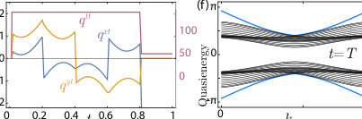
<figcaption class="paper-figure-caption"><b>Fig 1.</b> FIG. 2. (a) Time evolution of the highest phase band extrema (shaded envelope) for the RLBL model. Each gap closing is labeled with its topological charge in a circle; the +1 charge at t = tc signals the appearance of a dynamical edge state. (b) Bulk Floquet quasienergy spectrum of the RLBL model. (c),(e) Time dependence of the integrated quantum metric components qmn = 2π P</figcaption>
</figure>
<figure class="paper-figure-card">
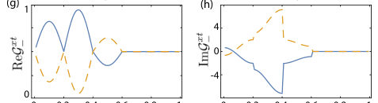
<figcaption class="paper-figure-caption"><b>Fig 2.</b> FIG. 1. (a) Time-dependent minimum and maximum of the highest phase band (shaded region) for the RLBL model. Gap closings occur at t = 0.4T which is a topological singular- ity. The topological charge of each gap closing is shown in a nearby circle. (b) The phase bands at t = T/2. (c) Brillouin- zone-integrated quantum metric components qmn = P</figcaption>
</figure>
<figure class="paper-figure-card">
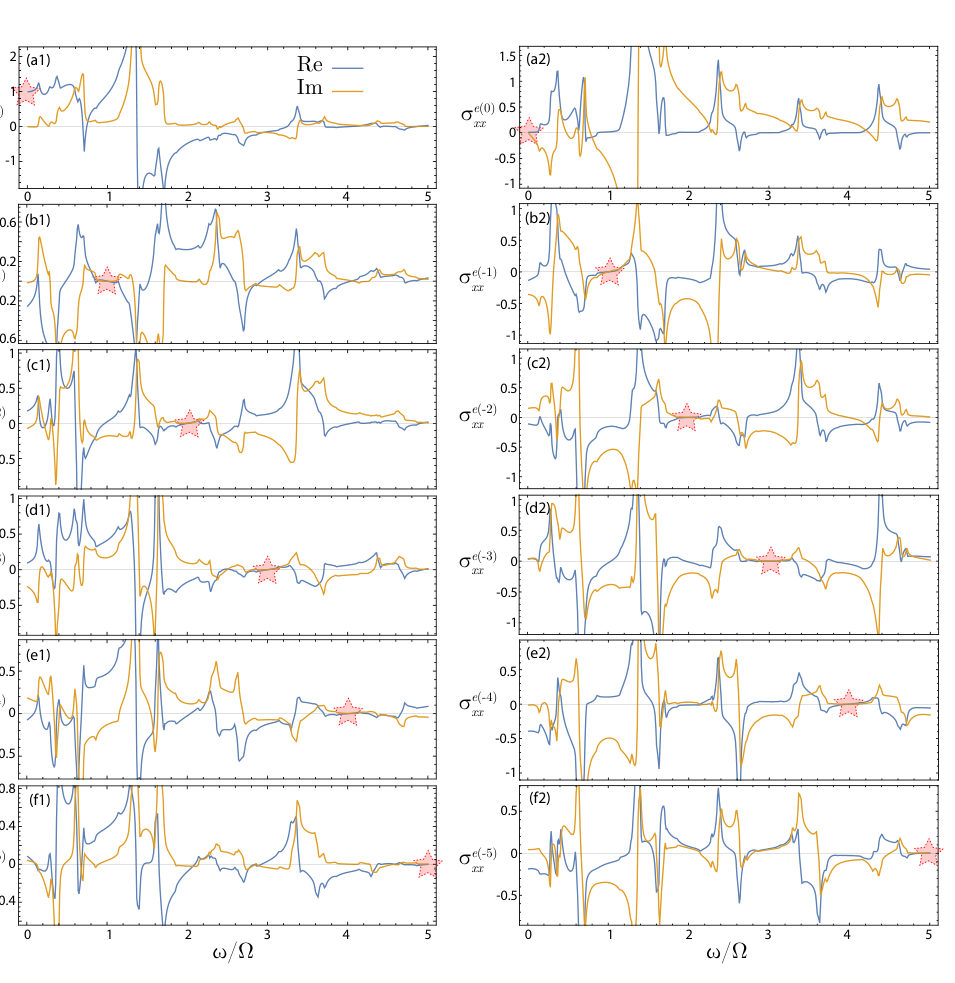
<figcaption class="paper-figure-caption"><b>Fig 3.</b> FIG. 3. (a)–(f) Frequency dependence of the Fourier components σ[1]e(−n) xy and σ[1]e(−n) xx , n = 0, 1, 2, 3, 4, 5 of the optical conductivity for the RLBL model, shown in units of e2/h under the assumption of ideal Floquet-state occupation. The quantized DC value—proportional to the Chern number—and the conductivity zeros mandated by Eqs. (17) and (18) are marked by dashed red stars. The parameters are J = 3π/2, T = 1, δ = 0.5π/T.</figcaption>
</figure>
<figure class="paper-figure-card">
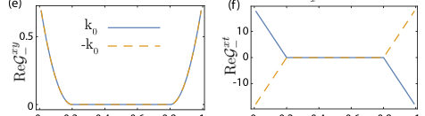
<figcaption class="paper-figure-caption"><b>Fig 4.</b> FIG. 4. (a) Time dependence of the highest phase band extrema (shaded envelope) for the Hsym model. (b) Phase bands at t = T/2 within the first FBZ. (c) Quantum weight components qmn, where {m, n} ∈{x, y, t} with the scale for qtt given on the right axis. The symmetries of the model en- force qxx = qyy and qxy = qxt = qyt = 0. (d) Nanoribbon phase bands at t = T. The parameters are J = 3π/2, δ = 0, T = 1. (e-f) the nonzero components of quantum geomet- ric tensors Gxy −and Gxt −at two special momenta k = −k0 and k = k0 = (0.1, 0.2). Parameters: J = 5π/2, T = 1, δ = π/2.</figcaption>
</figure>
</div>

<p><strong>Summary.</strong> This paper develops a unified theoretical framework using the time-dependent quantum geometric tensor to characterize periodically driven quantum systems. It extends concepts like Berry curvature to the time domain, deriving sum rules that link these geometric quantities directly to measurable optical responses. The findings establish this tensor as a key diagnostic tool for understanding topological and dynamical effects in Floquet matter.</p>
<p><strong>Why it may be interesting.</strong> This work provides powerful diagnostic tools (the time-dependent quantum geometric tensor) for understanding how topological and geometric properties manifest in driven quantum matter, which is highly relevant to open quantum systems and Floquet engineering.</p>
<details>
<summary>Detailed structure</summary>
<p><strong>Main problem.</strong> The primary goal is extending the concept of quantum geometry (Berry curvature and quantum metric) from static Bloch bands to periodically driven Floquet systems.</p>
<p><strong>Main result.</strong> The authors establish a time-dependent quantum geometric tensor as a unified framework describing geometric, topological, and dynamical properties in these driven systems. They show that first-order DC Hall and longitudinal responses vanish under ideal band occupations.</p>
<p><strong>Method.</strong> The methodology involves defining time-dependent geometric tensors in the Floquet-Bloch basis, deriving optical sum rules relating Fourier components of these tensors to measurable conductivity, and performing detailed symmetry analyses.</p>
<p><strong>Model / system.</strong> The study focuses on two-dimensional (2D) quantum systems subjected to a time-periodic Hamiltonian, analyzed using Floquet theory. Specific models include the Rudner-Lindner-Berg-Levin (RLBL) model and fully symmetric Floquet Hamiltonians.</p>
<p><strong>Key observables.</strong> Time-dependent Berry curvature ($\Omega_{xy}(t)$), quantum metric ($g_{xy}(t)$), optical conductivity $\sigma(\omega)$, and quantized charge pumping currents.</p>
<p><strong>Important parameters / regimes.</strong> Periodicity $T$, quasienergy bands, harmonic frequencies $n\Omega$, and the assumption of ideal Floquet-band occupations.</p>
<p><strong>Assumptions / limitations.</strong> The analysis heavily relies on assuming ideal occupation (bands fully filled or empty) to derive zero DC response sum rules. It also assumes orthogonality for the Floquet states.</p>
<p><strong>Figures summary.</strong> Figures illustrate time dependence of phase band extrema, components of geometric tensors ($G_{xy}^-, G_{xt}^-$), and confirm analytical predictions regarding conductivity zeros and sum rules.</p>
<p><strong>Paper structure.</strong> The paper builds from defining the time-dependent quantum geometric tensor in Floquet systems to deriving optical sum rules. It then explores non-adiabatic charge pumping via mixed Berry curvature, followed by a comprehensive symmetry analysis constraining the tensor components.</p>
</details>
<details>
<summary>Abstract</summary>
<p>The quantum geometry of Bloch bands, characterized by the Berry curvature and the quantum metric, underpins a wide range of linear and nonlinear responses in static systems. Here, we extend this framework to periodically driven (Floquet) systems by introducing a time-dependent Berry curvature and quantum metric defined directly in the Floquet-Bloch basis. We derive optical sum rules that relate the Fourier components of these geometric quantities to the optical conductivity and demonstrate that, under ideal Floquet-band occupations, the first-order DC Hall and longitudinal responses at harmonic frequencies vanish identically. We further introduce a mixed Berry curvature involving time and momentum derivatives, which gives rise to a non-adiabatic quantized charge-pumping mechanism that occurs naturally during each driving period without requiring adiabatic evolution. In addition, we identify the time-domain quantum metric as a measure of the energy fluctuations of a Floquet band and interpret its mixed components as quantifying polarization-energy correlations. A comprehensive symmetry analysis reveals how time-reversal, sublattice (chiral), particle-hole, inversion, rotational, and reflection symmetries constrain the time-dependent quantum geometric tensor and its associated topological invariant. Numerical simulations of the Rudner-Lindner-Berg-Levin model and a fully symmetric Floquet model confirm the analytical predictions. These results establish the time-dependent quantum geometric tensor as a unified framework for describing the geometric, topological, and dynamical properties of periodically driven quantum systems, with direct implications for optical spectroscopy, quantum transport, and topological charge-pumping experiments.</p>
</details>
<p><sub><a href="#top">↑ back to top</a></sub></p>

<p><a id="paper-2608.00723"></a></p>
<h3 id="hyperbolic-tangent-shocks-in-a-lossy-nonlinear-transmission-line"><a href="http://arxiv.org/abs/2608.00723v1">Hyperbolic-Tangent Shocks in a Lossy Nonlinear Transmission Line</a></h3>
<p><strong>Authors:</strong> Eugene Kogan<br>
<strong>Type:</strong> theory · <strong>Category:</strong> other · <strong>PDF:</strong> <a href="https://arxiv.org/pdf/2608.00723v1">https://arxiv.org/pdf/2608.00723v1</a><br>
<strong>Analysis basis:</strong> full PDF text, analyzed in chunks
<strong>Topic relevance:</strong> <code>driven-dissipative phase transition</code> <strong>3/5</strong> · <code>methods for driven-dissipative</code> <strong>3/5</strong> · <code>non-equilibrium dynamics</code> <strong>3/5</strong> · <code>non-equilibrium universality</code> <strong>3/5</strong> · <code>Frenkel-Kontorova</code> <strong>2/5</strong> · <code>Keldysh / 2PI / non-Gaussian methods</code> <strong>2/5</strong> · <code>analog quantum simulation</code> <strong>2/5</strong> · <code>correlated / nonlocal dissipation</code> <strong>2/5</strong> · <code>Kondo &amp; dissipative impurity</code> <strong>1/5</strong> · <code>entanglement &amp; information structure</code> <strong>1/5</strong> · <code>exotic spin models in light-matter</code> <strong>1/5</strong> · <code>scars &amp; prethermalization</code> <strong>1/5</strong></p>
<div class="figure-strip-hint">↔ Scroll figures horizontally</div>
<div class="paper-figures-scroll">
<figure class="paper-figure-card">
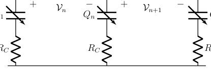
<figcaption class="paper-figure-caption"><b>Fig 1.</b> FIG. 1. Unit cells of the lossy nonlinear transmission line.</figcaption>
</figure>
<figure class="paper-figure-card">

<figcaption class="paper-figure-caption"><b>Fig 2.</b> FIG. 2. Comparison of the exact normalized force eF(v) (solid line) and the approximate normalized force eFG(v) obtained from the least-squares approximation (dashed line), for m = 2 and w = 1.2.</figcaption>
</figure>
<figure class="paper-figure-card">
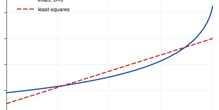
<figcaption class="paper-figure-caption"><b>Fig 3.</b> FIG. 3. Comparison of the exact normalized force eF(v) (solid line) and the approximate normalized force eFG(v) obtained from the least-squares approximation (dashed line), for m = 2 and w = 10.</figcaption>
</figure>
<figure class="paper-figure-card">

<figcaption class="paper-figure-caption"><b>Fig 4.</b> FIG. 5. Comparison of the exact normalized force eF(v) (solid line) and the approximate normalized force eFG(v) obtained from the least-squares approximation (dashed line), for m = 1.5 and w = 3.</figcaption>
</figure>
<figure class="paper-figure-card">

<figcaption class="paper-figure-caption"><b>Fig 5.</b> FIG. 4. Comparison of the exact normalized force eF(v) (solid line) and the approximate normalized force eFG(v) obtained from the least-squares approximation (dashed line), for m = 3 and w = 0.8.</figcaption>
</figure>
</div>

<p><strong>Summary.</strong> This paper investigates traveling shock fronts in a lossy nonlinear transmission line by solving an inverse problem for the required voltage-charge relation. The authors derive both exact and approximate solutions, demonstrating that physical constraints select a shock front. The work rigorously distinguishes between shocks and kinks using characteristic analysis of the underlying partial differential equations.</p>
<p><strong>Why it may be interesting.</strong> While not directly quantum mechanical, the mathematical techniques used—solving nonlinear PDEs, inverse problem formulation, and analyzing wave front structures (shocks/kinks)—are highly relevant to understanding non-equilibrium dynamics in open quantum systems or classical field theories derived from quantum models.</p>
<details>
<summary>Detailed structure</summary>
<p><strong>Main problem.</strong> The paper solves an inverse problem to determine the voltage-charge relation required for a specific hyperbolic-tangent traveling front profile in a lossy nonlinear transmission line.</p>
<p><strong>Main result.</strong> Both exact and approximate constructions confirm that physical admissibility selects a shock front, and the results show asymptotic agreement up to order m^-2 in the broad-front limit.</p>
<p><strong>Method.</strong> The authors employed an inverse problem approach by prescribing the $   anh$ profile, alongside constructing an approximation assuming a cubic voltage-charge relation and using characteristic analysis on the underlying PDEs.</p>
<p><strong>Model / system.</strong> The system is a lossy nonlinear transmission line modeled by coupled partial differential equations. The dynamics are reduced to an ODE for traveling waves, characterized by nonlinearity and damping terms.</p>
<p><strong>Key observables.</strong> Normalized force $eF(v)$, the distinction between compressive shocks (Lax-type) and noncompressive kinks via characteristic analysis, and the voltage-charge relation expressed using the Gauss hypergeometric function.</p>
<p><strong>Important parameters / regimes.</strong> Dimensionless width parameter ($m$), dimensionless squared wave speed ($w$), and the front velocity $U$.</p>
<p><strong>Assumptions / limitations.</strong> The exact solution is found by prescribing a $   anh$ profile. The approximation assumes a cubic voltage-charge relation, and the analysis relies on continuum approximations of discrete unit cells.</p>
<p><strong>Figures summary.</strong> Figures compare the exact normalized force $eF(v)$ with the least-squares approximation $e_{FG}(v)$ across various parameters ($m$ and $w$), illustrating asymptotic agreement.</p>
<p><strong>Paper structure.</strong> The paper proceeds by setting up the PDE model, solving the inverse problem exactly to find the required voltage-charge relation (involving ${}_2F_1$), developing an approximate solution via cubic fitting, and finally using characteristic analysis to rigorously distinguish between shock and kink solutions.</p>
</details>
<details>
<summary>Abstract</summary>
<p>We investigate traveling fronts in a lossy nonlinear transmission line. By prescribing a hyperbolic-tangent profile with dimensionless width $m$, we solve the inverse problem of determining the voltage--charge relation for which this profile is an exact solution. The exact relation is expressed in terms of the Gauss hypergeometric function. We also construct an approximate solution by assuming a cubic voltage--charge relation and replacing the resulting quadratic damping function with its optimal linear least-squares approximation. This construction determines the cubic coefficients and yields a modified governing equation that admits the prescribed profile as an exact solution. In both constructions, physical admissibility selects a shock front. In the broad-front limit, the approximate normalized force agrees with the exact result through order $m^{-2}$; numerical comparisons show that the agreement remains good even outside the asymptotic region of large $m$. Finally, a characteristic analysis of the original partial differential equations distinguishes compressive shocks from noncompressive kinks without recourse to the mechanical analogy.</p>
</details>
<p><sub><a href="#top">↑ back to top</a></sub></p>

<p><a id="paper-2608.02029"></a></p>
<h3 id="emission-dynamics-in-zincblende-inasxp1-x-quantum-dots-in-inp-nanowires-influence-of-quantum-dot-size-composition-and-nanowire-geometry"><a href="http://arxiv.org/abs/2608.02029v1">Emission dynamics in zincblende InAsxP1-x quantum dots in InP nanowires: influence of quantum dot size, composition and nanowire geometry</a></h3>
<p><strong>Authors:</strong> Tomasz Gzyl, Giada Bucci, Krzysztof Gawarecki, Elisa García-Tabarés, Anna Musiał, Valentina Zannier, Ylea Vlamidis, Fabio Beltram, Julian V. Montero, Beatriz Galiana, Lucia Sorba, Wojciech Rudno-Rudziński, Grzegorz Sęk<br>
<strong>Type:</strong> both · <strong>Category:</strong> other · <strong>PDF:</strong> <a href="https://arxiv.org/pdf/2608.02029v1">https://arxiv.org/pdf/2608.02029v1</a><br>
<strong>Analysis basis:</strong> full PDF text, analyzed in chunks
<strong>Topic relevance:</strong> <code>correlated / nonlocal dissipation</code> <strong>3/5</strong> · <code>interference shaping light</code> <strong>3/5</strong> · <code>Tavis-Cummings &amp; cavity-many-emitter</code> <strong>2/5</strong> · <code>correlated cavity matter</code> <strong>2/5</strong> · <code>driven-dissipative phase transition</code> <strong>2/5</strong> · <code>methods for driven-dissipative</code> <strong>2/5</strong> · <code>Keldysh / 2PI / non-Gaussian methods</code> <strong>1/5</strong> · <code>Kondo &amp; dissipative impurity</code> <strong>1/5</strong> · <code>analog quantum simulation</code> <strong>1/5</strong> · <code>non-equilibrium dynamics</code> <strong>1/5</strong> · <code>quantum optics experiment</code> <strong>1/5</strong></p>
<div class="figure-strip-hint">↔ Scroll figures horizontally</div>
<div class="paper-figures-scroll">
<figure class="paper-figure-card">

<figcaption class="paper-figure-caption"><b>Fig 1.</b> Fig. 1. SEM images of ZB QD-NWs of sample C from the top view (a) and from 45° tilted</figcaption>
</figure>
<figure class="paper-figure-card">

<figcaption class="paper-figure-caption"><b>Fig 2.</b> Fig.2 HRSTEM image of the QD with determined dimensions (a) EDS map of the same NW QD (b) As, P and In atomic distribution as a function of the QD height (axial direction)</figcaption>
</figure>
<figure class="paper-figure-card">

<figcaption class="paper-figure-caption"><b>Fig 3.</b> Fig. 3. Composition profile of InAsxP1-x QD in InP NW with As content colour- coded adapted in the calculation of strain and further in numerical 8 band k.p</figcaption>
</figure>
<figure class="paper-figure-card">

<figcaption class="paper-figure-caption"><b>Fig 4.</b> Fig. 4. The lifetimes (solid lines, the scale on the left) and the energies (dashed lines, the</figcaption>
</figure>
<figure class="paper-figure-card">

<figcaption class="paper-figure-caption"><b>Fig 5.</b> Fig. 5. The electron and hole probability density (the ground states) in the growth direction for h = 2 nm (a) and h = 10 nm (b) with shaded region marking the QD size.</figcaption>
</figure>
</div>

<p><strong>Summary.</strong> This research experimentally and theoretically examines exciton emission dynamics in semiconductor QDs embedded in NWs. By combining time-resolved photoluminescence with advanced simulations, the authors quantify how QD size, composition, and the surrounding waveguide structure modulate the radiative lifetime via the Purcell effect. This provides critical guidelines for engineering solid-state quantum light sources for telecom applications.</p>
<p><strong>Why it may be interesting.</strong> This work directly addresses open quantum systems by quantifying how engineered photonic environments (waveguides) modify fundamental quantum decay rates, a key concept in solid-state quantum emitters for quantum information.</p>
<details>
<summary>Detailed structure</summary>
<p><strong>Main problem.</strong> The study investigates how quantum dot (QD) emission dynamics, specifically exciton lifetime, are influenced by the QD size, composition, and the surrounding nanowire (NW) geometry.</p>
<p><strong>Main result.</strong> The radiative lifetime is strongly dependent on the photonic environment; thin NW shells can cause significant spontaneous emission inhibition via the Purcell effect, while structural changes influence the intrinsic QD potential.</p>
<p><strong>Method.</strong> A combination of time-resolved photoluminescence measurements and advanced theoretical modeling, including 8-band k.p calculations, configuration-interaction models, and FDTD simulations for optical confinement, was employed.</p>
<p><strong>Model / system.</strong> The system involves zincblende InAsxP1-x QDs embedded within InP nanowires grown via CBE. The analysis considers the interplay between material properties (composition/size) and the photonic environment provided by the NW waveguide structure.</p>
<p><strong>Key observables.</strong> Exciton lifetime ($    au$), Purcell factor ($F_P$), emission wavelength, and spectral dependence of these quantities.</p>
<p><strong>Important parameters / regimes.</strong> QD composition ($x$), QD height, InP shell thickness (e.g., 55 nm vs 150 nm), and the resulting optical confinement modes ($   ext{HE}_{11}$).</p>
<p><strong>Assumptions / limitations.</strong> The analysis requires considering both changes in the intrinsic QD potential and the external photonic environment (Purcell effect) for a full understanding.</p>
<p><strong>Figures summary.</strong> Figures illustrate PL spectra, measured decay times across different sample geometries (A, B, C), and calculated Purcell factors ($F_p$) as a function of emission wavelength.</p>
<p><strong>Paper structure.</strong> The paper follows an experimental/theoretical cycle: structural characterization ($    ext{STEM}$/$   ext{EDS}$) informs the theoretical models ($\mathbf{k}\cdot\mathbf{p}$, CI) which are then used to interpret time-resolved PL measurements across varying NW geometries and QD parameters.</p>
</details>
<details>
<summary>Abstract</summary>
<p>Hereby, we present an experimental and theoretical investigation of emission dynamics in zincblende InAsxP1-x quantum dots (QDs) embedded in InP nanowires (NWs) grown via vapour-liquid-solid mechanism by chemical beam epitaxy, using Au nanoparticles as a nucleation catalyst. By measuring time-resolved photoluminescence from an ensemble of QD-NWs it was possible to determine the exciton lifetime dependence on QD composition and height. Changes in the InP shell thickness surrounding the InP NW stem with a QD, brought additional insight into the influence of photonic environment on the carrier dynamics. High-resolution transmission electron microscopy, combined with energy-dispersive X-ray spectroscopy, provided actual structural parameters. The experimentally obtained lifetimes were interpreted in the light of results of 8 band kp calculations combined with configuration-interaction model to take into account the Coulomb interactions and finite-difference time domain photonic simulations to include the effect of optical confinement. The full understanding of the experimental results required considering both, the changes in the QD potential and the Purcell effect, the latter leading to spontaneous emission inhibition in the case of NWs with thin InP shell.</p>
</details>
<p><sub><a href="#top">↑ back to top</a></sub></p>

<p><a id="paper-2608.00388"></a></p>
<h3 id="planar-interfaces-for-transmission-of-chiral-spin-textures"><a href="http://arxiv.org/abs/2608.00388v1">Planar Interfaces for Transmission of Chiral Spin Textures</a></h3>
<p><strong>Authors:</strong> Robin Msiska, Cynthia J. O. Reichhardt, Charles Reichhardt, Eric Fullerton, Avadh Saxena<br>
<strong>Type:</strong> theory · <strong>Category:</strong> other · <strong>PDF:</strong> <a href="https://arxiv.org/pdf/2608.00388v1">https://arxiv.org/pdf/2608.00388v1</a><br>
<strong>Analysis basis:</strong> full PDF text, analyzed in chunks
<strong>Topic relevance:</strong> <code>exotic spin models in light-matter</code> <strong>3/5</strong> · <code>non-equilibrium dynamics</code> <strong>3/5</strong> · <code>spintronics-quantum-optics interface</code> <strong>3/5</strong> · <code>driven-dissipative phase transition</code> <strong>2/5</strong> · <code>methods for driven-dissipative</code> <strong>2/5</strong> · <code>non-equilibrium universality</code> <strong>2/5</strong> · <code>Frenkel-Kontorova</code> <strong>1/5</strong> · <code>Keldysh / 2PI / non-Gaussian methods</code> <strong>1/5</strong> · <code>analog quantum simulation</code> <strong>1/5</strong> · <code>correlated / nonlocal dissipation</code> <strong>1/5</strong></p>
<div class="figure-strip-hint">↔ Scroll figures horizontally</div>
<div class="paper-figures-scroll">
<figure class="paper-figure-card">

<figcaption class="paper-figure-caption"><b>Fig 1.</b> FIG. 1. Planar interface geometries considered in this work. (a) General source–receiving geometry, with a skyrmion driven from material 1 on the left toward an interface Γ separating two magnetic media, and material 2 on the right taken as the receiving region. (b)–(e) Block representations of the four interface classes, with attached colored regions indicating the two media on either side of the interface. Blue denotes a ferromagnetic region and red denotes an antiferromagnetic region. (b) FM–FM interface, where the magnetic order type is ferromagnetic on both sides. (c) AFM–AFM interface, where the magnetic order type is antiferromagnetic on both sides. (d) FM–AFM interface, where a...</figcaption>
</figure>
<figure class="paper-figure-card">

<figcaption class="paper-figure-caption"><b>Fig 2.</b> FIG. 2. Representative transmission outcomes, shown us- ing an FM–FM interface as an illustrative example, for the morphological classes used in the phase diagrams. Transpar- ent skyrmions indicate earlier positions along the trajectory indicated by the faded red dashed line, while solid textures show the current or final outcome after interaction with the interface. (a) Compact skyrmion transmission, in which the incident texture crosses the interface and reforms as a localized skyrmion in the receiving region. The inset in panel (a) shows the spin texture of an isolated skyrmion: the colored arrows represent the local orientation of the magnetic moments, with white and black denoting...</figcaption>
</figure>
<figure class="paper-figure-card">

<figcaption class="paper-figure-caption"><b>Fig 3.</b> FIG. 3. FM–FM interface phase diagrams showing the structures formed in the variable right-hand region after a skyrmion is driven into it from the fixed left-hand region. Each panel shows the simulated right-region outcome as a function of the right-region DMI strength D and uniaxial anisotropy Ku at a fixed right-region exchange stiffness A. All panels correspond to a driving-current magnitude of |j| = 9 × 1012Am−2. The left-hand material parameters are held at A = 1.5 × 10−12Jm−1, D = 3.0 × 10−3Jm−2, and Ku = 8.0 × 105Jm−3. The categorical color scale groups the outcomes into background, stripe-domain, and skyrmion-like morphologies. Points labelled “FM” denote relaxation to the FM...</figcaption>
</figure>
<figure class="paper-figure-card">

<figcaption class="paper-figure-caption"><b>Fig 4.</b> FIG. 4. Reduced-coordinate summary of the AFM–AFM interface simulations. Each point corresponds to one receiving- side material parameter set after the outcomes obtained over the sampled drives have been combined, and is plotted us- ing the wall-width scale ∆defined in Equation (25) and the reduced DMI fraction κ defined in Equation (28). Color dis- tinguishes relaxation into the AFM background or failure to transmit, stripe-domain formation, deformed-skyrmion trans- mission, and compact-skyrmion transmission. The shaded vertical band spans the range of κ over which deformed or compact skyrmion reception is observed.</figcaption>
</figure>
<figure class="paper-figure-card">

<figcaption class="paper-figure-caption"><b>Fig 5.</b> FIG. 5. Reduced-coordinate comparison of mixed-order skyrmion transmission for (a) AFM–FM and (b) FM–AFM interfaces. Each point represents one receiving-side material parameter set after combining the outcomes obtained over the sampled drive values, and is plotted using the wall-width scale ∆defined in Equation (25) and the reduced DMI fraction κ defined in Equation (28). Color distinguishes relaxation into the background or failure to transmit, stripe-domain formation, and skyrmion transmission. The shaded bands span the values of κ associated with skyrmion transmission in each geometry. The different distributions in panels (a) and (b) demonstrate that AFM–FM and FM–AFM transmission are...</figcaption>
</figure>
</div>

<p><strong>Summary.</strong> This paper analyzes the transmission of magnetic skyrmions across various planar interfaces (e.g., FM/AFM). Using micromagnetic simulations, the authors demonstrate that these interfaces function as active transport elements whose behavior is dictated by the specific magnetic order change. The results provide reduced design criteria for engineering functional spintronic devices.</p>
<p><strong>Why it may be interesting.</strong> While focused on magnetism, the concept of 'active transport' across engineered boundaries, governed by local field equations and energy minimization principles, shares conceptual links with open quantum systems dynamics where boundary conditions dictate system evolution.</p>
<details>
<summary>Detailed structure</summary>
<p><strong>Main problem.</strong> The study investigates how chiral spin textures, specifically skyrmions, maintain their structural integrity when driven across abrupt material interfaces with varying magnetic order.</p>
<p><strong>Main result.</strong> Planar interfaces act as active transport elements, and the transmission outcome (e.g., compact vs. deformed) depends critically on the interface type (FM-FM, FM-AFM, etc.) and underlying material parameters.</p>
<p><strong>Method.</strong> The research employs continuum micromagnetic simulations combined with analytic reduced-coordinate criteria to map out phase diagrams for skyrmion transmission.</p>
<p><strong>Model / system.</strong> The system is an ultrathin film modeled by the Landau–Lifshitz–Gilbert equation, considering four types of planar interfaces (FM-FM, AFM-AFM, FM-AFM, AFM-FM). The energy functional includes bulk terms and explicit interface coupling energies.</p>
<p><strong>Key observables.</strong> Skyrmion transmission outcome classified as compact transmission, deformed skyrmions, stripe-domain states, amorphous textures, or relaxation into the background.</p>
<p><strong>Important parameters / regimes.</strong> Reduced Dzyaloshinskii-Moriya interaction (DMI), effective anisotropy, and dimensionless chirality ratios ($\kappa$).</p>
<p><strong>Assumptions / limitations.</strong> The material parameters are assumed to be piecewise constant across the interface; the model uses micromagnetic approximations for texture dynamics.</p>
<p><strong>Figures summary.</strong> Figure 1 illustrates the general source-receiving geometry and provides block representations for the four studied planar interface classes.</p>
<p><strong>Paper structure.</strong> The paper systematically develops the governing equations (LLG, energy functional) for different interface types, derives specific boundary conditions at the interface ($\Gamma$), analyzes the resulting phase diagrams using reduced parameters, and concludes by classifying interfaces as active transport elements.</p>
</details>
<details>
<summary>Abstract</summary>
<p>Lateral magnetic interfaces provide a direct way to test whether skyrmions remain robust when driven across abrupt changes in material parameters and magnetic order. Here we study skyrmion transmission across planar ferromagnet-ferromagnet (FM-FM), antiferromagnet-antiferromagnet (AFM-AFM), ferromagnet-antiferromagnet (FM-AFM), and antiferromagnet-ferromagnet (AFM-FM) interfaces using micromagnetic simulations and analytic reduced-coordinate criteria. The outcomes are organized into phase diagrams according to the morphology formed in the receiving region, distinguishing compact transmission from deformed skyrmions, stripe-domain states, amorphous textures, and relaxation into the background. Same-order FM-FM and AFM-AFM skyrmion transmission is captured by an analytically defined range of the reduced Dzyaloshinskii-Moriya interaction, identifying the wall-softening regime that supports compact transmission without stripe formation. Mixed-order FM-AFM and AFM-FM interfaces are directionally distinct, requiring conversion between ferromagnetic magnetization and antiferromagnetic Néel textures. These results show that planar interfaces act as active transport elements and provide reduced design criteria for heterogeneous skyrmion tracks.</p>
</details>
<p><sub><a href="#top">↑ back to top</a></sub></p>

<p><a id="paper-2608.01902"></a></p>
<h3 id="wannier-stark-localization-confinement-and-edge-states"><a href="http://arxiv.org/abs/2608.01902v1">Wannier-Stark localization, confinement and edge states</a></h3>
<p><strong>Authors:</strong> N. Aucar Boidi, A. Aharony, O. Entin-Wohlman, C. Proetto<br>
<strong>Type:</strong> theory · <strong>Category:</strong> other · <strong>PDF:</strong> <a href="https://arxiv.org/pdf/2608.01902v1">https://arxiv.org/pdf/2608.01902v1</a><br>
<strong>Analysis basis:</strong> full PDF text, analyzed in chunks
<strong>Topic relevance:</strong> <code>analog quantum simulation</code> <strong>3/5</strong> · <code>driven-dissipative phase transition</code> <strong>3/5</strong> · <code>methods for driven-dissipative</code> <strong>3/5</strong> · <code>non-equilibrium dynamics</code> <strong>3/5</strong> · <code>Frenkel-Kontorova</code> <strong>2/5</strong> · <code>non-equilibrium universality</code> <strong>2/5</strong> · <code>Keldysh / 2PI / non-Gaussian methods</code> <strong>1/5</strong> · <code>Kondo &amp; dissipative impurity</code> <strong>1/5</strong> · <code>scars &amp; prethermalization</code> <strong>1/5</strong></p>
<div class="figure-strip-hint">↔ Scroll figures horizontally</div>
<div class="paper-figures-scroll">
<figure class="paper-figure-card">

<figcaption class="paper-figure-caption"><b>Fig 1.</b> FIG. 1. A sketch of the one-dimensional lattice, represented by the dotted circles along the horizontal axis, with an odd number of sites placed in a linear potential µ j = eaF j. Each step indicates the energy of the corresponding site due to the presence of the potential which vanishes at the central site of the chain j = 0. Electrons can hop between neighboring sites with energy t.</figcaption>
</figure>
<figure class="paper-figure-card">

<figcaption class="paper-figure-caption"><b>Fig 2.</b> FIG. 2. (Color online) Probability nj = Jj(x)2 of finding a single electron in the Wannier-Stark eigenstate ℓ= 0, as a function of site index j, for several values of the electric fields F, in units of t/(ea). These states are localized around the cite j = 0. The full lines connect the actual values, which are calculated only for integer j. The straight segments signal the value of the localization length 2ξ = 4t/(eF).</figcaption>
</figure>
<figure class="paper-figure-card">

<figcaption class="paper-figure-caption"><b>Fig 3.</b> FIG. 3. (Color online) Occupation number profile for different values of x, Eq. (13). The squares indicate the distance ξ from the origin, see Eq. (9).</figcaption>
</figure>
<figure class="paper-figure-card">

<figcaption class="paper-figure-caption"><b>Fig 4.</b> FIG. 4. The energy levels of the two-dimensional case, with M = 5, N′ = 5, Eq. (16). The horizontal axis denotes the index ℓ, which is also equal to the horizontal site index around which the corre- sponding states are localized, j = ℓ. The thick segments represent the Wannier-Stark ladder. Each of these energies is “dressed&quot; by a band of N′ levels, representing the band of “free&quot; electronic states in the transverse direction. The width of such a band is indicated by the double headed vertical arrow.</figcaption>
</figure>
</div>

<p><strong>Summary.</strong> This paper analyzes electron localization in lattices subjected to an electric field via the Wannier-Stark potential. It mathematically derives that these states are localized (Bessel functions), leading to insulating bulk behavior. By extending the model to 2D, it demonstrates how this confinement can create distinct metallic edge states alongside an insulating interior.</p>
<p><strong>Why it may be interesting.</strong> This work provides a concrete, solvable model for how external fields can induce topological or boundary phenomena in condensed matter systems, which is highly relevant for understanding engineered quantum materials and interfaces.</p>
<details>
<summary>Detailed structure</summary>
<p><strong>Main problem.</strong> The paper investigates Wannier-Stark localization, confinement, and the resulting edge states that appear at the boundary between a bulk material and vacuum when subjected to an electric field.</p>
<p><strong>Main result.</strong> In 1D, the system is always insulating due to localized Wannier-Stark states; however, extending to 2D allows for the construction of models exhibiting both an insulating bulk and potentially metallic edge states.</p>
<p><strong>Method.</strong> The analysis relies on solving tight-binding Hamiltonians in the presence of a linear potential, leading to eigenfunctions expressible in terms of Bessel functions.</p>
<p><strong>Model / system.</strong> The model is non-interacting electrons on a 2D lattice subjected to a Wannier-Stark potential generated by an electric field along one axis. The physics transitions from 1D chains (analyzed via recurrence relations) to 2D lattices with transverse tunneling.</p>
<p><strong>Key observables.</strong> Localization length ($\xi$), electron occupation profile $n(j;x)$, and the energy spectrum showing discrete Wannier-Stark levels coupled to continuous transverse bands.</p>
<p><strong>Important parameters / regimes.</strong> The dimensionless parameter $x = 2t/(eaF)$ controls the degree of localization, with limits analyzed for large ($x 	o \infty$) and small ($x 	o 0$) electric fields.</p>
<p><strong>Assumptions / limitations.</strong> Initially assumes non-interacting electrons; later incorporates electron-electron interactions (Hubbard/nearest-neighbor) to study correlated effects near the edge.</p>
<p><strong>Figures summary.</strong> Figures illustrate the localization of states in 1D, the occupation profile decaying across an edge region at half-filling, and the resulting energy band structure in 2D.</p>
<p><strong>Paper structure.</strong> The paper progresses from establishing the 1D Wannier-Stark ladder using Bessel functions to analyzing the many-electron filling (insulating bulk) before extending the formalism to a 2D lattice model that reveals metallic edge possibilities.</p>
</details>
<details>
<summary>Abstract</summary>
<p>The boundary between a system's bulk and the vacuum can be modeled by a potential which confines the electrons to the bulk. Here we present the example of the Wannier-Stark linear potential, generated by an electric field along one axis of a two-dimensional lattice. Along that axis, the potential generates electronic states which are localized around each lattice site, with eigenenergies which form the Wannier-Stark ladder. In the transverse direction, the states are governed by a tight binding model with free Bloch states. In the ground state, filling these states under the Pauli principle generates an insulating bulk and an edge which can be metallic in the transverse direction. This paper explains the concepts of localization, localization length, filling and confinement. The paper also acquaints the readers with the use of Bessel functions in the solution of a simple physical model. These topics can be easily included in courses on solid state physics, and only require prior knowledge of quantum mechanics.</p>
</details>
<p><sub><a href="#top">↑ back to top</a></sub></p>

<p><a id="paper-2608.02393"></a></p>
<h3 id="floquet-spin-group-framework-and-its-application-to-light-tailored-spin-splitting-in-collinear-magnets"><a href="http://arxiv.org/abs/2608.02393v1">Floquet spin-group framework and its application to light-tailored spin splitting in collinear magnets</a></h3>
<p><strong>Authors:</strong> Tongshuai Zhu, Zixuan Li, Huaiqiang Wang, Su-Huai Wei, Jiawei Ruan<br>
<strong>Type:</strong> theory · <strong>Category:</strong> other · <strong>PDF:</strong> <a href="https://arxiv.org/pdf/2608.02393v1">https://arxiv.org/pdf/2608.02393v1</a><br>
<strong>Analysis basis:</strong> full PDF text, analyzed in chunks
<strong>Topic relevance:</strong> <code>exotic spin models in light-matter</code> <strong>3/5</strong> · <code>non-equilibrium dynamics</code> <strong>3/5</strong> · <code>spintronics-quantum-optics interface</code> <strong>3/5</strong> · <code>analog quantum simulation</code> <strong>2/5</strong> · <code>driven-dissipative phase transition</code> <strong>2/5</strong> · <code>methods for driven-dissipative</code> <strong>2/5</strong> · <code>Keldysh / 2PI / non-Gaussian methods</code> <strong>1/5</strong> · <code>non-equilibrium universality</code> <strong>1/5</strong></p>
<div class="figure-strip-hint">↔ Scroll figures horizontally</div>
<div class="paper-figures-scroll">
<figure class="paper-figure-card">

<figcaption class="paper-figure-caption"><b>Fig 1.</b> FIG. 1. Floquet spin splittings and dynamical symmetry in driven collinear magnets. (a) The symmetries of a collinear compensated magnet can be described by spin groups, whereas the symmetries of different light can be characterized by dynamical groups. For circular polarized light (CPL) with vector potential A0(cos ωt, sin ωt, 0), the generators of the dynamical group are [E||Cn]·τn, [T ||mx]·τ2, [E||P]·τ2, and for bilinear polarized light (BLPL) with vector potential A0(sin ωt, sin 2ωt, 0), the generators are [E||mx] · τ2, [T ||E] · τE (see main text for the details). For this specific BLPL, the inversion symmetry is lifted while the time-reversal symmetry is preserved, which is opposite...</figcaption>
</figure>
<figure class="paper-figure-card">

<figcaption class="paper-figure-caption"><b>Fig 2.</b> FIG. 2. Calculations of light-selected spin splitting in two-dimensional materials. (a-d) Calculated Fermi surface of MnPSe3 in the absence of light at EF = −0.3 eV (a), under CPL irradiation at EF = −0.3 eV (b), under BLPL irradiation with α = 0 at EF = −0.35 (c) and under BLPL irradiation with α = π/4 at EF = −0.35 (d). The driving parameters are ℏω = 10 eV and ˜A = 0.35 ˚A−1. (e-h), CCorresponding Fermi surfaces of Mn2P2S3Se3 without light at EF = −0.2 eV(e), under CPL irradiation at EF = −0.335 eV (f), under BLPL irradiation with α = 0 at EF = −0.335 (g) and under BLPL irradiation with α = π/4 at EF = −0.335 eV (h). The driving parameters are ℏω = 10 eV and ˜A = 0.25 ˚A−1.</figcaption>
</figure>
<figure class="paper-figure-card">

<figcaption class="paper-figure-caption"><b>Fig 3.</b> FIG. 3. Light selected spin splitting in three-dimensional tight-binding models. (a), Lattice model used for the tetragonal model with spin point group14/1m1m1m∞m1. (b-d) Fermi surfaces at EF = 1.2 eV under CPL irradiation (b), under BLPL irradiation with α = 0 (c), and under BLPL irradiation with α = π/4 (d). (e) Lattice model used for the hexagonal model with spin point group 16/1m∞m1. (f-h) Fermi surfaces of the hexagonal model at EF = −2.4 eV under CPL irradiation (f), under BLPL irradiation with α = 0 (g) and under BLPL irradiation with α = π/4 (h). The driving parameters are ℏω = 10 eV and ˜Aa = 2 for both models.</figcaption>
</figure>
</div>

<p><strong>Summary.</strong> This paper introduces a novel Floquet spin-group framework that unifies the study of light-induced spin splitting in collinear magnets. By combining crystal symmetry with the dynamical symmetry of polarized light, the authors provide systematic rules for engineering specific types of electronic band structures. This allows researchers to precisely control magnetic properties by tailoring external optical driving fields.</p>
<p><strong>Why it may be interesting.</strong> This work provides a powerful theoretical tool—a symmetry classification scheme—to predict and engineer electronic properties in magnetic materials using external electromagnetic fields, which is highly relevant to quantum optics and open quantum systems research.</p>
<details>
<summary>Detailed structure</summary>
<p><strong>Main problem.</strong> The primary goal is establishing a unified symmetry principle connecting the dynamical symmetry of incident light to the resulting spin-split electronic band structures in magnetic materials.</p>
<p><strong>Main result.</strong> The authors developed a Floquet spin-group framework that systematically classifies allowed parity and momentum dependence for light-induced spin splittings, enabling the switching between different splitting types (odd, even, mixed) using tailored driving fields.</p>
<p><strong>Method.</strong> The methodology combines crystal spin point group theory with the dynamical symmetry group of light to define a governing Floquet spin group ($\mathcal{G}_D$). This framework is applied via time-dependent Hamiltonian analysis and quasienergy constraints.</p>
<p><strong>Model / system.</strong> The study focuses on collinear magnets, particularly altermagnets (AM) and antiferromagnets (AFM), modeled with negligible spin-orbit coupling. The system dynamics are governed by a Floquet Hamiltonian derived from periodic driving by light fields (CPL or BLPL).</p>
<p><strong>Key observables.</strong> Spin-resolved quasienergy bands, the parity of spin splitting (odd/even/mixed), and higher-order wave splittings ($h$-wave, $k$-wave).</p>
<p><strong>Important parameters / regimes.</strong> The driving field parameters, such as polarization type (CPL vs. BLPL) and relative phases ($\alpha$), act as crucial tuning knobs.</p>
<p><strong>Assumptions / limitations.</strong> The framework is initially developed for collinear magnets with negligible spin-orbit coupling, although it claims general applicability.</p>
<p><strong>Figures summary.</strong> Figures illustrate the generators defining the dynamical light group ($    ilde{G}_L$) and provide schematic classification tables showing how different light symmetries dictate the resulting parity of spin splittings in AMs.</p>
<p><strong>Paper structure.</strong> The paper introduces the problem by noting the lack of a unified symmetry principle. It then develops the Floquet spin-group framework, applies it to classify various splitting types (2D and 3D), and concludes with specific examples demonstrating how light polarization controls these symmetries.</p>
</details>
<details>
<summary>Abstract</summary>
<p>Altermagnets combine momentum-dependent spin splitting with vanishing net magnetization, opening new opportunities for spintronics. Recent studies have shown that periodic driving by linearly or circularly polarized light, as well as by multicolor light fields, can control spin splitting in altermagnets and conventional antiferromagnets, and can even generate spin splitting patterns absent in equilibrium. Despite this progress, a unified principle connecting the dynamical symmetry of light to the symmetry of spin-split bands remains lacking, limiting the systematic design of light-induced spin structures. Here, by combining the spin group of crystals with the dynamical group of light, we establish a unified Floquet spin group framework for the study of periodically driven collinear magnets with negligible spin-orbit coupling. This framework systematically determines the allowed parity, momentum dependence, and nodal structure of spin splitting under different driving protocols. Guided by this symmetry classification, we show that odd-parity, even-parity, and mixed-parity spin splittings can be switched within the same material by tailoring the driving field. We further uncover higher-order $h$-wave and $k$-wave spin splittings in three-dimensional systems. Our work establishes a unified symmetry framework for light-controlled spin splitting and provides general principles for engineering nonequilibrium spin-band structures in altermagnets and related magnetic materials.</p>
</details>
<p><sub><a href="#top">↑ back to top</a></sub></p>

<p><a id="paper-2608.01698"></a></p>
<h3 id="tip-enhanced-vibrational-ladder-climbing-in-surface-molecular-system"><a href="http://arxiv.org/abs/2608.01698v1">Tip-Enhanced Vibrational Ladder Climbing in Surface Molecular System</a></h3>
<p><strong>Authors:</strong> Tatsuto Mochizuki, Shota Takahashi, Atsunori Sakurai, Toshiki Sugimoto<br>
<strong>Type:</strong> both · <strong>Category:</strong> other · <strong>PDF:</strong> <a href="https://arxiv.org/pdf/2608.01698v1">https://arxiv.org/pdf/2608.01698v1</a><br>
<strong>Analysis basis:</strong> full PDF text, analyzed in chunks
<strong>Topic relevance:</strong> <code>methods for driven-dissipative</code> <strong>3/5</strong> · <code>non-equilibrium dynamics</code> <strong>3/5</strong> · <code>non-equilibrium universality</code> <strong>2/5</strong> · <code>quantum measurements</code> <strong>2/5</strong> · <code>quantum optics experiment</code> <strong>2/5</strong> · <code>Keldysh / 2PI / non-Gaussian methods</code> <strong>1/5</strong> · <code>correlated / nonlocal dissipation</code> <strong>1/5</strong> · <code>driven-dissipative phase transition</code> <strong>1/5</strong></p>
<div class="figure-strip-hint">↔ Scroll figures horizontally</div>
<div class="paper-figures-scroll">
<figure class="paper-figure-card">

<figcaption class="paper-figure-caption"><b>Fig 1.</b> FIG. 1. (a) Schematic of tip-enhanced VLC. CO on Pt(111) is excited by an IR near field in the tip–substrate nanogap with an electric field component normal to the substrate surface (Egap). (b) STM image of CO/Pt(111) at 0.5 ML coverage acquired in constant-current mode at a sample bias voltage of 0.25 V and a tunneling current of 0.5 nA. The image was pre- processed with the “Stripe Removal” program [23]. The inset is a schematic representation of Pt atoms and CO molecules. The blue rectangles indicate the unit cell of the c( √</figcaption>
</figure>
<figure class="paper-figure-card">

<figcaption class="paper-figure-caption"><b>Fig 2.</b> FIG. 2. (a) IR pulse energy dependence of forward-scattered TE-SFG spectra for CO/Pt(111). The probe pulse energy was maintained at 14 pJ. Backward-scattered spectra are shown in Supplemental Material Sec. S5 [27]. (b, c) Probe pulse energy dependence of TE-SFG spectra with IR pulse energy fixed at 10 pJ. Signal intensities are normalized to the peak intensity (c). The inset in (b) shows the integrated intensity of TE-SFG spectra as a function of the probe pulse energy. The red line is a linear fit to the data.</figcaption>
</figure>
<figure class="paper-figure-card">

<figcaption class="paper-figure-caption"><b>Fig 3.</b> FIG. 3. (a) FDTD simulation setup for calculating the electric field enhancement in the tip–substrate nanogap. (b) Intensity enhancement factor (|Egap/E0|2) at the center of the nanogap as a function of the incident light wavenumber. The inten- sity enhancement factor is estimated to be 8.3 × 105 near the CO vibrational resonance. (c) Temporal profile of the electric field in the nanogap under irradiation by an incident pulse with fluence fgap = 100 mJ cm−2. (d) Time evolution of pop- ulations of the v = 0−4 states calculated using the multilevel optical Bloch equations when fgap = 100 mJ cm−2.</figcaption>
</figure>
<figure class="paper-figure-card">

<figcaption class="paper-figure-caption"><b>Fig 4.</b> FIG. 4. Experimental and simulated TE-SFG spectra of CO on Pt(111). (a) Experimental TE-SFG spectra at various IR pulse energies. (b) 2D map of experimental TE-SFG spectra as a function of wavenumber and IR pulse energy. (c) Sim- ulated TE-SFG spectra at various IR pulse energies. (d) 2D map of simulated TE-SFG spectra as a function of wavenum- ber and IR pulse energy. The spectra in panels (a) and (c) are vertically offset for clarity.</figcaption>
</figure>
</div>

<p><strong>Summary.</strong> This paper reports on achieving 'vibrational ladder climbing'—the stepwise excitation to high vibrational states—in CO/Pt(111) using tip-enhanced sum-frequency generation (TE-SFG). By coupling near-field plasmonics with ultrafast spectroscopy, the authors demonstrate a powerful technique for non-equilibrium control over molecular vibrations. This opens a promising pathway for manipulating chemical reactions by precisely controlling vibrational energy at the nanoscale.</p>
<p><strong>Why it may be interesting.</strong> This work is highly relevant as it pushes the boundaries of quantum control at the nanoscale. Using TE-SFG allows for probing ultrafast, non-equilibrium vibrational dynamics in surface molecules, which is a core topic in AMO physics and quantum optics.</p>
<details>
<summary>Detailed structure</summary>
<p><strong>Main problem.</strong> The primary goal is to actively control molecular reactions by accessing high-lying vibrational energy states, which are difficult to reach using conventional methods.</p>
<p><strong>Main result.</strong> The study successfully demonstrated the stepwise population of higher vibrational levels (vibrational ladder climbing) in CO adsorbed on Pt(111) using tip-enhanced sum-frequency generation (TE-SFG).</p>
<p><strong>Method.</strong> The research combines ultrafast, time-resolved TE-SFG spectroscopy with numerical simulations based on solving the optical Bloch equations.</p>
<p><strong>Model / system.</strong> The system involves CO molecules adsorbed on a Pt(111) surface, probed within the near-field nanogap of an STM tip. The dynamics are modeled using anharmonic potentials (Morse potential) and solved via the optical Bloch equations.</p>
<p><strong>Key observables.</strong> Sequential appearance of 'hot-band peaks' corresponding to transitions like $0
ightarrow 1$, $1
ightarrow 2$, up to $3
ightarrow 4$; these hot bands are non-thermal and decay rapidly in time delay ($ au=5    ext{ ps}$).</p>
<p><strong>Important parameters / regimes.</strong> The process is highly dependent on the near-field enhancement provided by the plasmonic tip gap, with simulations showing field enhancements up to $10^6$. The accessible vibrational level is limited by the IR excitation bandwidth.</p>
<p><strong>Assumptions / limitations.</strong> Key assumptions include that the observed hot bands are due to intra-pulse excitation rather than population accumulation over successive pulses. Model limitations include neglecting intermolecular dipole–dipole coupling and instantaneous frequency shifts.</p>
<p><strong>Figures summary.</strong> Figures illustrate schematics of the TE-SFG setup, show the sequential appearance of multiple resonant peaks as IR pulse energy increases, and compare experimental spectra with simulations based on time evolution calculations.</p>
<p><strong>Paper structure.</strong> The paper establishes the need for high vibrational state control, details the use of TE-SFG in the STM nanogap to overcome limitations, presents evidence of stepwise population transfer (VLC), validates this using theoretical models (optical Bloch equations), and concludes by discussing the bandwidth limitation on excitation.</p>
</details>
<details>
<summary>Abstract</summary>
<p>Achieving high-lying vibrational states is essential for actively controlling molecular reactions. We demonstrate vibrational ladder climbing of CO adsorbed on Pt(111) within the plasmonic tip-substrate nanogap formed in a scanning tunneling microscope, detected via tip-enhanced sum-frequency generation (TE-SFG). As the infrared pulse energy increases, hot-band peaks appear sequentially up to the 3-4 transition, indicating the stepwise population of higher vibrational states. Numerical analysis using the optical Bloch equations captures the observed energy dependence of these features. These results demonstrate the capability of TE-SFG to probe vibrational ladder climbing in surface molecular systems and suggest a promising route toward accessing high-lying vibrational states and controlling vibrational excitation at the nanoscale.</p>
</details>
<p><sub><a href="#top">↑ back to top</a></sub></p>

<p><a id="paper-2608.02131"></a></p>
<h3 id="coherent-migration-of-the-single-excitation-injected-into-finite-length-segment-of-the-biomolecular-chain"><a href="http://arxiv.org/abs/2608.02131v1">Coherent migration of the single excitation injected into finite-length segment of the biomolecular chain</a></h3>
<p><strong>Authors:</strong> D. Chevizovich, V. Matic, Z. Przulj, S. Galovic<br>
<strong>Type:</strong> theory · <strong>Category:</strong> other · <strong>PDF:</strong> <a href="https://arxiv.org/pdf/2608.02131v1">https://arxiv.org/pdf/2608.02131v1</a><br>
<strong>Analysis basis:</strong> full PDF text, analyzed in chunks
<strong>Topic relevance:</strong> <code>non-equilibrium dynamics</code> <strong>3/5</strong> · <code>Frenkel-Kontorova</code> <strong>2/5</strong> · <code>methods for driven-dissipative</code> <strong>2/5</strong> · <code>Keldysh / 2PI / non-Gaussian methods</code> <strong>1/5</strong> · <code>Kondo &amp; dissipative impurity</code> <strong>1/5</strong> · <code>analog quantum simulation</code> <strong>1/5</strong> · <code>correlated / nonlocal dissipation</code> <strong>1/5</strong> · <code>driven-dissipative phase transition</code> <strong>1/5</strong> · <code>interference shaping light</code> <strong>1/5</strong> · <code>non-equilibrium universality</code> <strong>1/5</strong></p>
<div class="figure-strip-hint">↔ Scroll figures horizontally</div>
<div class="paper-figures-scroll">
<figure class="paper-figure-card">

<figcaption class="paper-figure-caption"><b>Fig 1.</b> FIG. 1. Schematic representation of the considered molecular structure. The excitation is initially induced at the SE labeled by n0. The initially excited SE belongs to the MS, which forms part of a long MC.</figcaption>
</figure>
<figure class="paper-figure-card">

<figcaption class="paper-figure-caption"><b>Fig 2.</b> FIG. 2. A schematic representation of the renumbered MS. The SE where the excitation is initially induced is labeled as 0. On the left side of the zeroth SE, there are M SEs numbered from 1 to M. On the right side, there are N SEs numbered from 1 to N.</figcaption>
</figure>
<figure class="paper-figure-card">

<figcaption class="paper-figure-caption"><b>Fig 3.</b> FIG. 3. A schematic illustration of the rule allowing one to obtain V (L) n (x) for a (M, N) structure, from V (R) n (x) of the corresponding (M ′ = N, N ′ = M) structure.</figcaption>
</figure>
<figure class="paper-figure-card">

<figcaption class="paper-figure-caption"><b>Fig 4.</b> FIG. 4. TPS corresponding to the two nearest-neighbor sites of the initially excited site in a MS with M = 4, N = 16 (K = 21) SEs. For clarity, the site numbering in the figure follows the convention introduced in Fig. 1, where the sites are numbered starting from the left edge of the MS. The initially excited site is n0 = 5. Left panel: TPS corresponding to site n = 4. Right panel: TPS corresponding to site n = 6. Parameters: S = 0.3, B = 0.1, θ = 4.</figcaption>
</figure>
<figure class="paper-figure-card">

<figcaption class="paper-figure-caption"><b>Fig 5.</b> FIG. 5. TPS on the edge nodes of the MS, for the configura- tion M = 4, N = 16 (K = 21) SEs. The node numbering in the graph follows the convention used in Fig. 1. The initially excited node is n0 = 5. Left panel: probability distribution for the node n = 1. Right panel: probability distribution for the node n = 21. Parameters: S = 0.3, B = 0.1, θ = 4.</figcaption>
</figure>
</div>

<p><strong>Summary.</strong> This paper theoretically analyzes how a single excitation moves coherently within a finite segment of a biomolecular chain. It shows that the migration dynamics are dominated by complex quantum interference patterns rather than simple classical diffusion. Crucially, it reveals that boundary conditions and the initial placement of the excitation induce measurable asymmetries in the probability distribution.</p>
<p><strong>Why it may be interesting.</strong> This work provides a detailed quantum mechanical description of energy transport in nanoscale biological systems, bridging concepts from polaron physics and quantum walks to explain non-trivial spatial localization effects governed by geometry.</p>
<details>
<summary>Detailed structure</summary>
<p><strong>Main problem.</strong> The study investigates the coherent migration of a single excitation injected into a finite segment of a biomolecular chain.</p>
<p><strong>Main result.</strong> The probability distribution exhibits an asymmetry for symmetrically placed nodes, which is solely due to the initial asymmetric placement within the finite boundary. The dynamics are governed by quantum interference rather than classical propagation.</p>
<p><strong>Method.</strong> The analysis involves solving time-dependent equations of motion derived from a modified Holstein model using techniques like Laplace transforms and relating the problem to continuous-time quantum walk models.</p>
<p><strong>Model / system.</strong> The system is modeled as a finite molecular segment (MS) within a biomolecular chain, described by an adapted Holstein Hamiltonian coupling electronic excitations to lattice vibrations. The excitation forms a self-trapped state resembling a nonadiabatic polaron.</p>
<p><strong>Key observables.</strong> Time-dependent probability distribution of the excitation at nodes ($p_n(t)$), asymmetry in this distribution, and interference patterns.</p>
<p><strong>Important parameters / regimes.</strong> The initial excitation position ($n_0$), boundary conditions (finite length $K$), and dimensionless parameters related to coupling strength ($S$) and hopping ($B$).</p>
<p><strong>Assumptions / limitations.</strong> The model assumes the excitation cannot leave the finite segment, employs a Lang-Firsov unitary transformation, and uses a mean-field approximation that neglects incoherent polaron–phonon scattering.</p>
<p><strong>Figures summary.</strong> Figures illustrate the Time-Probability Spectrum (TPS) showing deviations from symmetry at later times due to boundary effects, and demonstrate how the probability distribution evolves based on whether the initial excitation site is central or off-center.</p>
<p><strong>Paper structure.</strong> The paper establishes the physical model using a modified Holstein Hamiltonian; it then applies polaron transformations and mean-field approximations to derive equations of motion for the correlation functions. The core analysis focuses on solving these equations to determine the time evolution, highlighting geometric effects like boundary asymmetry.</p>
</details>
<details>
<summary>Abstract</summary>
<p>We study the migration of a single excitation excited at a structural element of a finite molecular segment, which is a part of a long biomolecular chain. The excitation cannot leave the segment and is locally coupled to thermal vibrations of the lattice, forming a self-trapped state corresponding to a nonadiabatic polaron. The time-dependent probability distribution of finding the excitation at the nodes of the segment is calculated, with particular emphasis on the role of the initial excitation position. A formal analogy is observed between the present model and continuous-time quantum walk models on finite chains with reflecting boundaries. The results reveal an asymmetry in the probability distribution for nodes symmetrically positioned with respect to the initially excited site, which arises solely from the asymmetric placement of the initial excitation within the finite segment. The only exception occurs when the initially excited node is located at the center of the segment, where the probability distribution becomes symmetric. The complex interference pattern and the absence of well-defined revivals stem from the non-equidistant spectrum of mode frequencies, leading to progressive dephasing of the constituent modes. As a result, the initially well-localized probability maximum fragments into one dominant maximum accompanied by several secondary maxima of lower intensity. These findings highlight the importance of boundary conditions and initial-state geometry in controlling quantum transport in finite molecular systems.</p>
</details>
<p><sub><a href="#top">↑ back to top</a></sub></p>

<p><a id="paper-2608.01313"></a></p>
<h3 id="microwave-response-of-the-superconducting-diode-effect-in-proximitized-bilayer-graphene-interferometers"><a href="http://arxiv.org/abs/2608.01313v1">Microwave Response of the Superconducting Diode Effect in Proximitized Bilayer Graphene Interferometers</a></h3>
<p><strong>Authors:</strong> Shili Yan, Rubén Seoane Souto, Yi Luo, Jeroen Danon, Haitian Su, Junze Zhang, Han Gao, Xingjun Wu, Ji-Yin Wang, H. Q. Xu<br>
<strong>Type:</strong> experiment · <strong>Category:</strong> other · <strong>PDF:</strong> <a href="https://arxiv.org/pdf/2608.01313v1">https://arxiv.org/pdf/2608.01313v1</a><br>
<strong>Analysis basis:</strong> full PDF text, analyzed in chunks
<strong>Topic relevance:</strong> <code>driven-dissipative phase transition</code> <strong>3/5</strong> · <code>methods for driven-dissipative</code> <strong>3/5</strong> · <code>non-equilibrium dynamics</code> <strong>3/5</strong> · <code>non-equilibrium universality</code> <strong>2/5</strong> · <code>Keldysh / 2PI / non-Gaussian methods</code> <strong>1/5</strong> · <code>Kondo &amp; dissipative impurity</code> <strong>1/5</strong> · <code>QC/QI experiment</code> <strong>1/5</strong></p>
<div class="figure-strip-hint">↔ Scroll figures horizontally</div>
<div class="paper-figures-scroll">
<figure class="paper-figure-card">

<figcaption class="paper-figure-caption"><b>Fig 1.</b> Fig. 1 |Device and characterization of the SDE. a Optical image of SQUID-1. The scale bar is 10</figcaption>
</figure>
<figure class="paper-figure-card">

<figcaption class="paper-figure-caption"><b>Fig 2.</b> Fig. 2 | Microwave response of the SDE under a low-frequency microwave irradiation. a–d</figcaption>
</figure>
<figure class="paper-figure-card">

<figcaption class="paper-figure-caption"><b>Fig 3.</b> Fig. 3 | Microwave response of the SDE under two high-frequency microwave irradiations. a, b</figcaption>
</figure>
<figure class="paper-figure-card">

<figcaption class="paper-figure-caption"><b>Fig 4.</b> Fig. 4 | Simulated microwave response of the SDE under microwave irradiations of different</figcaption>
</figure>
<figure class="paper-figure-card">

<figcaption class="paper-figure-caption"><b>Fig 5.</b> Fig. 3 in the main article and Figure S2 in Supplementary Section 1. A single set of CPR parameters</figcaption>
</figure>
</div>

<p><strong>Summary.</strong> The authors experimentally investigate how the Superconducting Diode Effect (SDE) behaves in bilayer graphene SQUIDs when driven by microwaves at high frequencies. They demonstrate that the diode efficiency deviates significantly from predictions based on low-frequency adiabatic theory, showing complex power dependencies and oscillations. This work establishes BLG SQUIDs as a versatile platform for studying dynamic superconducting junction properties.</p>
<p><strong>Why it may be interesting.</strong> This work explores non-linear, time-dependent quantum electrodynamics effects in superconducting circuits. The transition from adiabatic to non-adiabatic regimes provides a rich testing ground for generalized Josephson junction models beyond simple DC approximations.</p>
<details>
<summary>Detailed structure</summary>
<p><strong>Main problem.</strong> The study investigates the microwave response of the Superconducting Diode Effect (SDE) in superconducting quantum interference devices (SQUIDs) beyond the simple adiabatic driving regime.</p>
<p><strong>Main result.</strong> At high microwave frequencies, the diode efficiency exhibits non-monotonic power dependence, sign reversal, and oscillatory characteristics, which are successfully modeled using the resistively shunted junction model with extracted current-phase relations.</p>
<p><strong>Method.</strong> The research combines DC transport measurements of $V$-$I$ curves and differential resistance ($dI/dV$) with microwave irradiation experiments across various frequencies. Theoretical analysis involves fitting the Josephson junction Current-Phase Relationship (CPR) using harmonic expansions.</p>
<p><strong>Model / system.</strong> The physical platform is a SQUID built from proximitized bilayer graphene, featuring superconducting Josephson junctions. The system dynamics are modeled using the Resistively Shunted Junction (RSJ) model and analyzed via time-dependent simulations incorporating extracted CPRs.</p>
<p><strong>Key observables.</strong> Diode efficiency ($\eta$), switching currents ($I_{sw}^\pm$), Shapiro steps, and the dependence of $\eta$ on microwave power ($P$) and driving frequency ($f$).</p>
<p><strong>Important parameters / regimes.</strong> Microwave frequencies (e.g., 1.2 GHz up to 10.8 GHz), magnetic flux ($\Phi/\Phi_0$), and microwave power ($P$).</p>
<p><strong>Assumptions / limitations.</strong> The analysis often relies on fitting the CPR using a truncated harmonic series, and simulations are sometimes restricted to low-power regimes to avoid heating effects.</p>
<p><strong>Figures summary.</strong> Figures show $V$-$I$ characteristics demonstrating SDE modulated by magnetic flux; subsequent figures map out $\eta$ vs. microwave power at various frequencies, revealing deviations from simple monotonic behavior.</p>
<p><strong>Paper structure.</strong> The paper progresses from basic characterization of the SDE in BLG SQUIDs under DC bias and low-frequency microwaves (adiabatic regime) to detailed analysis of high-frequency responses, culminating in fitting CPRs and simulating the frequency-dependent power response of $\eta$.</p>
</details>
<details>
<summary>Abstract</summary>
<p>Microwave irradiation has emerged as a promising means to tune the superconducting diode effect (SDE) in Josephson junction devices. Previous experimental studies have mainly focused on the adiabatic-driving regime, in which the diode efficiency increases monotonically with microwave power and can approach the ideal value of unity. Beyond this regime, however, the microwave response of the SDE remains largely unexplored experimentally. In this work, we investigate the microwave response of the SDE in bilayer-graphene-based superconducting quantum interference devices (SQUIDs) under a broad range of driving frequencies. We show that increasing the driving frequency changes the response characteristics of the diode efficiency to microwave power--the dependence of the diode efficiency evolves from monotonic enhancement with increasing microwave power in the adiabatic regime to non-monotonic behavior beyond this regime, and ultimately to sign-reversal as well oscillatory characteristics at sufficiently high frequencies. We find that these experimentally observed frequency-dependent power response characteristics of the diode efficiency can be qualitatively captured by simulations based on the resistively shunted junction model using the device current-phase relations extracted from the experiments. These results establish SQUIDs made from bilayer graphene as a versatile platform for studying dynamic properties of superconducting junction devices.</p>
</details>
<p><sub><a href="#top">↑ back to top</a></sub></p>
<hr>
<p>
<a href="index.html">← Index</a>
 · <a href="papers_07.html">← Previous</a> · <a href="papers_09.html">Next →</a>
</p>
<hr>

</body>
</html>
